מיפוי תיקונים לדוקו הרבי: החלפת דמויות והערות יגאל
נבנה ב-9.11.2026. בסיס: הסטוריבורד שנשלח ליגאל ב-13.10 (176 שוטים, 230 תמונות). התמונות הממוזערות הן הגרסה שיגאל ראה, לא גרסה מתוקנת. עיבוד: אדם.
דמויות: בכמה שוטים כל אחת מופיעה
| דמות | שוטים | מה קורה איתה | מספרי שוטים |
|---|---|---|---|
| הרבי הצעיר | 21 | להחלפה | 6, 7, 8, 11, 15, 17, 23, 28, 29, 30, 31, 32, 33, 34, 35, 36, 39, 42, 48, 106, 149 · לא ודאי: 10 |
| הרבי בגיל הביניים | 21 | מהם 3 שיגאל סימן כלא דומים (43, 60, 82/ב), 18 שלא סומנו | 43, 49, 50, 52, 56, 59, 60, 61, 64, 66, 68, 69, 70, 71, 73, 74, 75, 76, 78, 79, 82 · לא ודאי: 77 |
| הרבי הזקן | 57 | לא להחלפה (אלא אם יגאל העיר: 196, 149 וכו' סומנו בנפרד) | פתיח 4, פתיח 5, פתיח 6, פתיח 7, פתיח 8, פתיח 9, פתיח 10, פתיח 11, פתיח 14, פתיח 15, פתיח 16, פתיח 17, פתיח 19, 84, 86, 88, 91, 94, 98, 100, 102, 105, 109, 110, 114, 117, 118, 119, 120, 121, 122, 124, 127, 131, 133, 135, 137, 140, 141, 142, 143, 147, 148, 153, 154, 161, 162, 165, 166, 173, 174, 175, 177, 194, 196, 197, 198 · לא ודאי: op12, op18, 107, 111, 126, 128, 132, 192 |
| חיה מושקה | 11 | להחלפה | 16, 19, 23, 25, 28, 60, 67, 71, 112, 156, 158 · לא ודאי: 21, 155 |
| הריי"צ | 12 | להחלפה | 20, 29, 30, 32, 33, 46, 47, 48, 52, 53, 106, 149 |
| הרב גוראריה | 7 | להחלפה | 52, 55, 57, 62, 73, 74, 75 |
| אבי הרבי (לוי יצחק) | 1 | להחלפה | 5 · לא ודאי: 2 |
שוט נספר לכל דמות שמופיעה בו, ולכן סכום העמודה גדול ממספר השוטים. הרבי כילד מופיע בשוט 2 בלבד. "אחר" (פוליטיקאים, חסידים, האח, הרב שך וכו') מופיע בעמודת הדמויות בטבלה אך לא נספר כאן.
שאלות פתוחות
- הרבי בגיל הביניים. ההנחיה: להחליף רק מי שיגאל סימן. סימנתי להחלפה שלושה שוטים (43, 60, 82/ב). עוד 18 שוטים ברורים עם הרבי בגיל הביניים לא סומנו (49, 50, 52, 56, 59, 61, 64, 66, 68, 69, 70, 71, 73, 74, 75, 76, 78, 79, ובנוסף 77 שהוא ידיים בלבד). אם המאיירת מציירת גם אותו, כל אלה נכנסים לרשימה. השדה mid_unflagged ב-JSON מסמן אותם.
- מי הדמויות של המאיירת. בבקשת יגאל מ-20.10 (דרך נדב, תמלול משובש) נאמר: חיה מושקה, הריי"צ, אבי הרבי, הרבי הצעיר, ודמות חמישית ("שמריהו" או "גור אריה"). כאן הנחתי שהחמישית היא הרב גוראריה, כפי שהוגדר במשימה. ב-14.10 יגאל אמר ההפך על הריי"צ וגוראריה ("נשארים"). הבקשה של 20.10 גוברת, אבל שני הצדדים נשמעו בהקלטות משובשות.
- אבי הרבי. מופיע בבירור בשוט 5 בלבד. בשוט 2 (הרבי כילד הולך עם אביו, מהגב) לא ודאי. בשוט 40 רק מצבה.
- חיה מושקה כילדה (שוט 21) ואישה בת 70 בשוט 155. לא ברור אם ציורי המאיירת מחליפים אותן. 155: ברשימה הראשית זו "אחות" של הרבנית, בפרומפט אישה בת 70.
- שוט 10 (דמות רחוקה בשלג): הרשימה הראשית אומרת הרבי הצעיר, הכיתוב לא מזהה. מסומן לא ברור.
- שוט 25: "23 ואחר כך גם 25 בחתונה, זה לא הם". בשוט 25 הרבנית וחברה, לא החתונה. הכוונה לא ברורה, הרבנית מוחלפת בכל מקרה.
- שוט 33: החלטת איתן 13.10 השאירה פתוח מי הרבי. הפרומפט הסופי משתמש בדף הרבי הצעיר והריי"צ, ולכן סווג כך.
- שוט 52: הרבי בגיל הביניים או הצעיר? ההנחיה מ-12.10 מזכירה דף "צעיר", הפרומפט הסופי דף "בן 50". סווג כגיל ביניים, ולכן לא מוחלף אלא אם יוחלט אחרת. הריי"צ וגוראריה בשוט מוחלפים.
- שוטים 68 עד 70: הרשימה הראשית אומרת "זקן", אבל ב-13.10 הוחלט שבשוטים 63 עד 78 הרבי הוא דף בן ה-50. סווגו כגיל ביניים.
- לבירור מול יגאל (מ-14.10, עדיין פתוח אצלנו): 43 ("כבר 51": גיל או שנה), 101 ו-113 (הפריים המצויר יורד לטובת הווידאו?), 175 ו-177 (איפה המרפסת בסרט), 23 ו-28 (דולי או צילום מאחור), 25.
- 56: בתמלול נכתב "הרייץ, סבבה באמת". כיוון ש-56 הוא קלוז אפ של הרבי בגיל הביניים, זה כנראה שיבוש של "הרבי". לא הוחלף.
- לא נמצאו הערות של יגאל אחרי 14.10. חיפשתי ב-ROADMAP.md, ב-lessons.md ובתיקיות התמלולים. הפגישה שנקבעה ל-15.10 ב-10:00 על תאריך המסירה לא תומללה. אין תיעוד שתיקוני 14.10 בוצעו (הקבצים האחרונים בכלי הסטוריבורד הם מ-13.10).
- המאיירת: בתיקיית character sheets/Ellen 8.11 יש ארבעה דיוקנאות (אישה צעירה, גבר צעיר בכובע, ושני זקנים בכיפה). לא זיהיתי בוודאות איזה זקן הוא הריי"צ ואיזה גוראריה או האב.
- אישור בשתיקה: שוטים בלי הערה נחשבים מאושרים לפי החלטת איתן מ-13.10, לא לפי אמירה של יגאל (מסומן באפור בעמודת "מה אושר").
הטבלה המלאה
| מס' שוט | תמונות | תיאור קצר | דמויות | סטטוס | מה אושר | מה לתקן | מקור ההערה |
|---|---|---|---|---|---|---|---|
| פתיח 1 0:00 עד 2:27 | 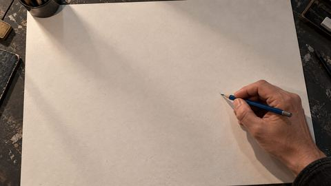 | דף ריק: יד אוחזת עיפרון כחול מעל דף לבן וריק על שולחן עבודה. | אין דמות מזוהה | ✅ מאושר, בלי דמות להחלפה | הפתיח: ההתחלה מדף ריק, "מתחילים מאפס לצייר אותו". הפתיח של נדב (1.10.26) בצבע עד 2:27. | אין | 14.10.26 שיחת תיקונים עם יגאל, 14.10.26 (מהדוח, לא אותר בקטע התמלול שנקרא) (לא אומת בתמלול) |
| פתיח 2 0:00 עד 2:27 | 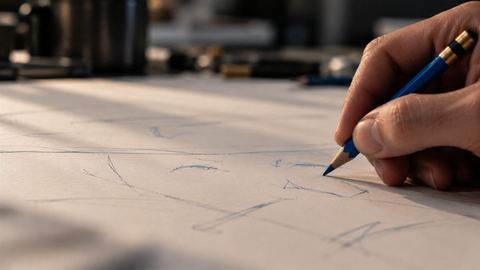 | הקווים הראשונים: העיפרון משרטט את הקווים הראשונים על הדף. | אין דמות מזוהה | ✅ מאושר, בלי דמות להחלפה | הפתיח: ההתחלה מדף ריק, "מתחילים מאפס לצייר אותו". הפתיח של נדב (1.10.26) בצבע עד 2:27. | אין | 14.10.26 שיחת תיקונים עם יגאל, 14.10.26 (מהדוח, לא אותר בקטע התמלול שנקרא) (לא אומת בתמלול) |
| פתיח 3 0:00 עד 2:27 | חוד העיפרון: חוד העיפרון הכחול מקרוב, מסמן קו על הנייר. | אין דמות מזוהה | ✅ מאושר, בלי דמות להחלפה | הפתיח: ההתחלה מדף ריק, "מתחילים מאפס לצייר אותו". הפתיח של נדב (1.10.26) בצבע עד 2:27. | אין | 14.10.26 שיחת תיקונים עם יגאל, 14.10.26 (מהדוח, לא אותר בקטע התמלול שנקרא) (לא אומת בתמלול) | |
| פתיח 4 0:00 עד 2:27 |  | צורה של כובע: הקווים הכחולים מתגבשים לצורה של כובע. | הרבי הזקן | ✅ מאושר, בלי דמות להחלפה | הפתיח: ההתחלה מדף ריק, "מתחילים מאפס לצייר אותו". הפתיח של נדב (1.10.26) בצבע עד 2:27. | אין | 14.10.26 שיחת תיקונים עם יגאל, 14.10.26 (מהדוח, לא אותר בקטע התמלול שנקרא) (לא אומת בתמלול) |
| פתיח 5 0:00 עד 2:27 |  | הפנים מופיעות: עיניים וגבות מופיעות על הדף, ומעליהן שולי הכובע. | הרבי הזקן | ✅ מאושר, בלי דמות להחלפה | הפתיח: ההתחלה מדף ריק, "מתחילים מאפס לצייר אותו". הפתיח של נדב (1.10.26) בצבע עד 2:27. | אין | 14.10.26 שיחת תיקונים עם יגאל, 14.10.26 (מהדוח, לא אותר בקטע התמלול שנקרא) (לא אומת בתמלול) |
| פתיח 6 0:00 עד 2:27 |  | הדיוקן מתבהר: היד מוסיפה קו אחר קו, והדיוקן מתבהר. | הרבי הזקן | ✅ מאושר, בלי דמות להחלפה | הפתיח: ההתחלה מדף ריק, "מתחילים מאפס לצייר אותו". הפתיח של נדב (1.10.26) בצבע עד 2:27. | אין | 14.10.26 שיחת תיקונים עם יגאל, 14.10.26 (מהדוח, לא אותר בקטע התמלול שנקרא) (לא אומת בתמלול) |
| פתיח 7 0:00 עד 2:27 |  | הדיוקן על הדף: דיוקן הרבי מוגמר על הדף, והיד מוסיפה את הקו האחרון. | הרבי הזקן | ✅ מאושר, בלי דמות להחלפה | הפתיח: ההתחלה מדף ריק, "מתחילים מאפס לצייר אותו". הפתיח של נדב (1.10.26) בצבע עד 2:27. | אין | 14.10.26 שיחת תיקונים עם יגאל, 14.10.26 (מהדוח, לא אותר בקטע התמלול שנקרא) (לא אומת בתמלול) |
| פתיח 8 0:00 עד 2:27 | 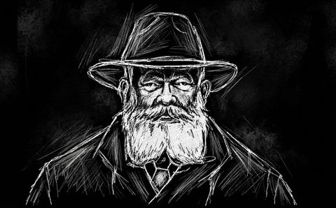 | לבן על שחור: הדיוקן עובר לשפת הסרט: הרבי, במגבעת ובזקן לבן, בקווי גיר לבנים על רקע שחור. | הרבי הזקן | ✅ מאושר, בלי דמות להחלפה | הפתיח: ההתחלה מדף ריק, "מתחילים מאפס לצייר אותו". הפתיח של נדב (1.10.26) בצבע עד 2:27. | אין | 14.10.26 שיחת תיקונים עם יגאל, 14.10.26 (מהדוח, לא אותר בקטע התמלול שנקרא) (לא אומת בתמלול) |
| פתיח 9 0:00 עד 2:27 |  | בהתוועדות: הרבי פורש את ידיו ליד המיקרופון, וחסידים מוחאים כפיים סביבו. | הרבי הזקן | ✅ מאושר, בלי דמות להחלפה | הפתיח: ההתחלה מדף ריק, "מתחילים מאפס לצייר אותו". הפתיח של נדב (1.10.26) בצבע עד 2:27. | אין | 14.10.26 שיחת תיקונים עם יגאל, 14.10.26 (מהדוח, לא אותר בקטע התמלול שנקרא) (לא אומת בתמלול) |
| פתיח 10 0:00 עד 2:27 |  | מאחורי הרבי: מאחורי גבו של הרבי נפרש אולם מלא עד אפס מקום, לאור נברשות. | הרבי הזקן | ✅ מאושר, בלי דמות להחלפה | הפתיח: ההתחלה מדף ריק, "מתחילים מאפס לצייר אותו". הפתיח של נדב (1.10.26) בצבע עד 2:27. | אין | 14.10.26 שיחת תיקונים עם יגאל, 14.10.26 (מהדוח, לא אותר בקטע התמלול שנקרא) (לא אומת בתמלול) |
| פתיח 11 0:00 עד 2:27 | 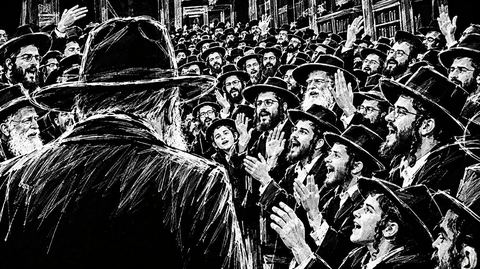 | מול הקהל: הרבי, בגבו אל הצופה, עומד מול חסידים ששרים ומריעים אליו. | הרבי הזקן | ✅ מאושר, בלי דמות להחלפה | הפתיח: ההתחלה מדף ריק, "מתחילים מאפס לצייר אותו". הפתיח של נדב (1.10.26) בצבע עד 2:27. | אין | 14.10.26 שיחת תיקונים עם יגאל, 14.10.26 (מהדוח, לא אותר בקטע התמלול שנקרא) (לא אומת בתמלול) |
| פתיח 12 0:00 עד 2:27 | 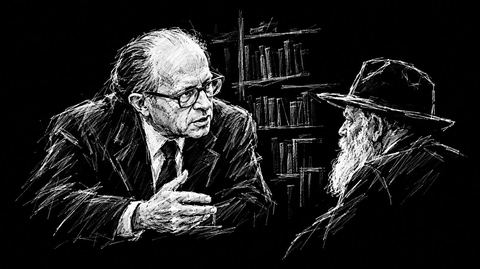 | עם מנחם בגין: מנחם בגין יושב מול הרבי בחדר ספרים ומדבר אליו בתנועת יד. | הרבי הזקן (לא ודאי) מנחם בגין | ✅ מאושר, בלי דמות להחלפה | הפתיח: ההתחלה מדף ריק, "מתחילים מאפס לצייר אותו". הפתיח של נדב (1.10.26) בצבע עד 2:27. | אין | 14.10.26 שיחת תיקונים עם יגאל, 14.10.26 (מהדוח, לא אותר בקטע התמלול שנקרא) (לא אומת בתמלול) |
| פתיח 13 0:00 עד 2:27 | 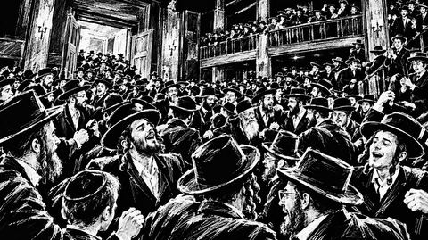 | המוני חסידים: חסידים שרים וידיהם באוויר ממלאים את בית הכנסת ואת היציעים. | חסידים | ✅ מאושר, בלי דמות להחלפה | הפתיח: ההתחלה מדף ריק, "מתחילים מאפס לצייר אותו". הפתיח של נדב (1.10.26) בצבע עד 2:27. | אין | 14.10.26 שיחת תיקונים עם יגאל, 14.10.26 (מהדוח, לא אותר בקטע התמלול שנקרא) (לא אומת בתמלול) |
| פתיח 14 0:00 עד 2:27 |  | שולחן ההתוועדות: בראש שולחן ארוך מרים הרבי את שתי ידיו, והחסידים משני צדי השולחן מוחאים כפיים. | הרבי הזקן | ✅ מאושר, בלי דמות להחלפה | הפתיח: ההתחלה מדף ריק, "מתחילים מאפס לצייר אותו". הפתיח של נדב (1.10.26) בצבע עד 2:27. | אין | 14.10.26 שיחת תיקונים עם יגאל, 14.10.26 (מהדוח, לא אותר בקטע התמלול שנקרא) (לא אומת בתמלול) |
| פתיח 15 0:00 עד 2:27 |  | עם אריאל שרון: אריאל שרון מדבר עם הרבי ברחוב בלילה, לאור פנס. | הרבי הזקן אריאל שרון | ✅ מאושר, בלי דמות להחלפה | הפתיח: ההתחלה מדף ריק, "מתחילים מאפס לצייר אותו". הפתיח של נדב (1.10.26) בצבע עד 2:27. | אין | 14.10.26 שיחת תיקונים עם יגאל, 14.10.26 (מהדוח, לא אותר בקטע התמלול שנקרא) (לא אומת בתמלול) |
| פתיח 16 0:00 עד 2:27 | 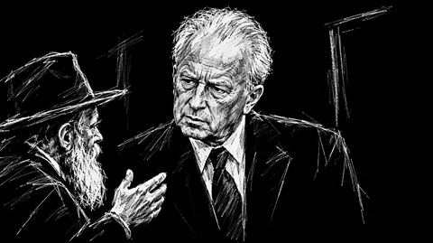 | עם יצחק רבין: הרבי מדבר בתנועת יד, ויצחק רבין מקשיב לו. | הרבי הזקן יצחק רבין | ✅ מאושר, בלי דמות להחלפה | הפתיח: ההתחלה מדף ריק, "מתחילים מאפס לצייר אותו". הפתיח של נדב (1.10.26) בצבע עד 2:27. | אין | 14.10.26 שיחת תיקונים עם יגאל, 14.10.26 (מהדוח, לא אותר בקטע התמלול שנקרא) (לא אומת בתמלול) |
| פתיח 17 0:00 עד 2:27 |  | עם בנימין נתניהו: הרבי נשען אל בנימין נתניהו ולוחש באוזנו. | הרבי הזקן בנימין נתניהו | ✅ מאושר, בלי דמות להחלפה | הפתיח: ההתחלה מדף ריק, "מתחילים מאפס לצייר אותו". הפתיח של נדב (1.10.26) בצבע עד 2:27. | אין | 14.10.26 שיחת תיקונים עם יגאל, 14.10.26 (מהדוח, לא אותר בקטע התמלול שנקרא) (לא אומת בתמלול) |
| פתיח 18 0:00 עד 2:27 |  | עם הרב כדורי: הרב יצחק כדורי, בזקן לבן ובכובע שחור גבוה, יושב מול הרבי. | הרבי הזקן (לא ודאי) הרב כדורי | ✅ מאושר, בלי דמות להחלפה | הפתיח: ההתחלה מדף ריק, "מתחילים מאפס לצייר אותו". הפתיח של נדב (1.10.26) בצבע עד 2:27. | אין | 14.10.26 שיחת תיקונים עם יגאל, 14.10.26 (מהדוח, לא אותר בקטע התמלול שנקרא) (לא אומת בתמלול) |
| פתיח 19 0:00 עד 2:27 | 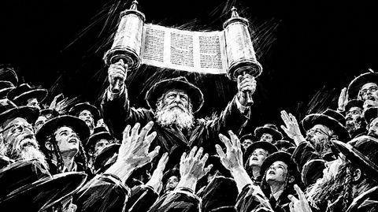 | ספר התורה: הרבי מגביה ספר תורה פתוח מעל הקהל, ועשרות ידיים מושטות אליו. | הרבי הזקן | ✅ מאושר, בלי דמות להחלפה | הפתיח: ההתחלה מדף ריק, "מתחילים מאפס לצייר אותו". הפתיח של נדב (1.10.26) בצבע עד 2:27. | אין | 14.10.26 שיחת תיקונים עם יגאל, 14.10.26 (מהדוח, לא אותר בקטע התמלול שנקרא) (לא אומת בתמלול) |
| 1 2:27 |  | המכתב לנשיא בן צבי: דף מכתב ובראשו סמל מונח על שולחן כתיבה לאור מנורה, ולצדו עט נובע. | אין דמות מזוהה | ✅ מאושר, בלי דמות להחלפה | לא נדון בשיחה של 14.10 (מאושר בשתיקה לפי החלטת איתן מ-13.10: מה שלא קיבל הערה, מאושר). | אין | אין הערה |
| 2 2:42 | 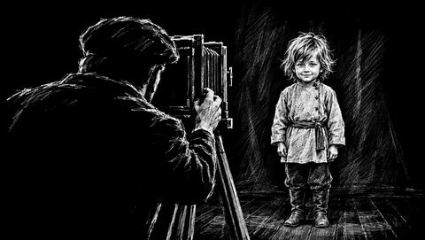 | עם אביו: ילד קטן הולך יד ביד עם אביו ברחוב של עיירה, בין בתי עץ וגדרות, ושניהם בגבם אל הצופה. | הרבי כילד אבי הרבי (לוי יצחק) (לא ודאי)הערות על הדמויות
| ❓ לא ברור | אין |
| אין הערה |
| 4 3:13 | 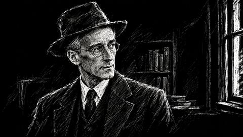 | האח, ישראל אריה לייב: אחיו של הרבי, ישראל אריה לייב, גבר מבוגר במגבעת ובמשקפיים עגולים, מביט אל החלון. | האח ישראל אריה לייב | ✅ מאושר, בלי דמות להחלפה | לא דומה לאח האמיתי, אבל הוחלט לא להשקיע ולהשאיר כמו שהוא (שוט אחד בלבד). |
| 14.10.26 שיחת תיקונים עם יגאל, 14.10.26 |
| 5 3:24 | 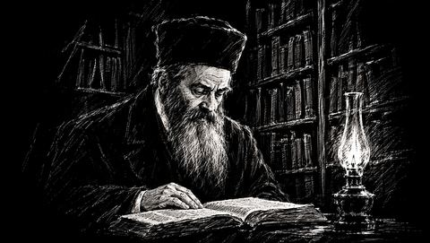 | האב, הרב לוי יצחק: אבי הרבי, הרב לוי יצחק, מעיין בספר פתוח לאור עששית, בין מדפי ספרים. | אבי הרבי (לוי יצחק) | 🔁✏️ החלפת דמות והערה | אין |
| 14.10.26 שיחת תיקונים עם יגאל, 14.10.26 20.10.26 זום 20.10.26 13:12, נדב מעביר את בקשת יגאל (התמלול משובש); הנחיית 9.11: ציורי המאיירת מחליפים את הדמויות האלה (לא אומת בתמלול) |
| 6 3:46 |  | מול מפת העולם: הרבי הצעיר, בגבו אל הצופה, מתבונן במפת עולם גדולה התלויה על קיר חדרו. | הרבי הצעיר | 🔁 החלפת דמות בלבד | "חמוד" (מפת העולם). |
| 14.10.26 שיחת תיקונים עם יגאל, 14.10.26 20.10.26 זום 20.10.26 13:12, נדב מעביר את בקשת יגאל (התמלול משובש); הנחיית 9.11: ציורי המאיירת מחליפים את הדמויות האלה (לא אומת בתמלול) |
| 7 3:57 | 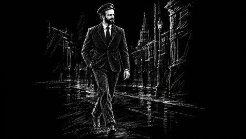 | צעיר בחליפה: בשנות העשרים לחייו, בחליפה ובכובע מצחייה, הרבי צועד ברחוב רטוב בעיר רוסית. | הרבי הצעיר | 🔁 החלפת דמות בלבד | אושר ("הצעיר בחליפה", בסיכום 14.10). בהקלטה: "בשבע הוא פחות, הוא מרחוק", כלומר פחות דומה אבל לא נפסל. |
| 14.10.26 שיחת תיקונים עם יגאל, 14.10.26 20.10.26 זום 20.10.26 13:12, נדב מעביר את בקשת יגאל (התמלול משובש); הנחיית 9.11: ציורי המאיירת מחליפים את הדמויות האלה (לא אומת בתמלול) |
| 8 4:12 | 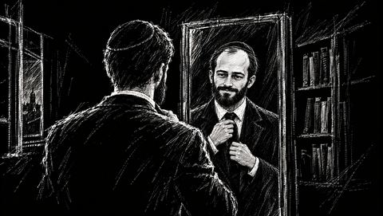 | מול המראה: הרבי הצעיר מסדר את העניבה מול מראה בחדרו בברלין. | הרבי הצעיר | 🔁✏️ החלפת דמות והערה | אין |
| 14.10.26 שיחת תיקונים עם יגאל, 14.10.26 20.10.26 זום 20.10.26 13:12, נדב מעביר את בקשת יגאל (התמלול משובש); הנחיית 9.11: ציורי המאיירת מחליפים את הדמויות האלה (לא אומת בתמלול) |
| 10 4:19 | 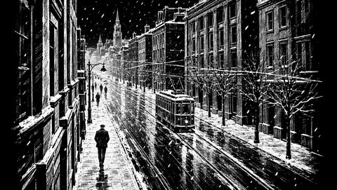 | ברלין בשלג: דמות בודדה מתרחקת על המדרכה ברחוב ברלינאי מושלג, וחשמלית חולפת לצדה. | הרבי הצעיר (לא ודאי)הערות על הדמויות
| ❓ לא ברור | אין |
| אין הערה |
| 11 4:27 | 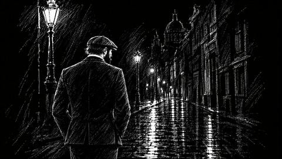 | מהגב, בלילה: גבר מזוקן בכובע מצחייה עומד בגבו אל הצופה ברחוב רטוב בברלין, לאור פנסים. | הרבי הצעיר | 🔁 החלפת דמות בלבד | אין |
| 20.10.26 זום 20.10.26 13:12, נדב מעביר את בקשת יגאל (התמלול משובש); הנחיית 9.11: ציורי המאיירת מחליפים את הדמויות האלה (לא אומת בתמלול) |
| 13 4:33 | 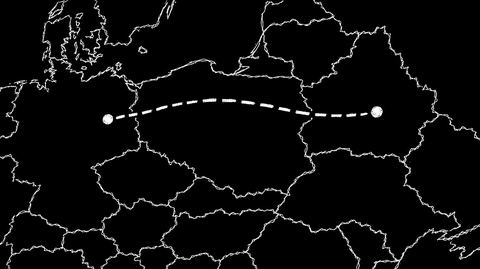  | בדרך לברלין: קו מקווקו נמתח על מפת אירופה ממזרח למערב, אל ברלין. מברלין לפריז: הקו ממשיך על המפה מברלין דרומה ומערבה, אל פריז. | אין דמות מזוהה | ✅ מאושר, בלי דמות להחלפה | לא נדון בשיחה של 14.10 (מאושר בשתיקה לפי החלטת איתן מ-13.10: מה שלא קיבל הערה, מאושר). | אין | אין הערה |
| 15 4:40 | 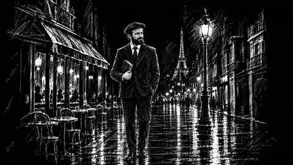 | ברחוב בפריז: הרבי הצעיר צועד בלילה ברחוב פריזאי, ספר תחת זרועו, ומאחוריו מגדל אייפל. | הרבי הצעיר | 🔁 החלפת דמות בלבד | אין |
| 20.10.26 זום 20.10.26 13:12, נדב מעביר את בקשת יגאל (התמלול משובש); הנחיית 9.11: ציורי המאיירת מחליפים את הדמויות האלה (לא אומת בתמלול) |
| 16 4:45 | 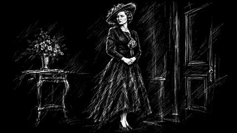 | חיה מושקה: חיה מושקה, בכובע רחב ובשמלה כהה, עומדת בחדר ליד שולחן קטן ועליו אגרטל פרחים. | חיה מושקה | 🔁 החלפת דמות בלבד | אין |
| 20.10.26 זום 20.10.26 13:12, נדב מעביר את בקשת יגאל (התמלול משובש); הנחיית 9.11: ציורי המאיירת מחליפים את הדמויות האלה (לא אומת בתמלול) |
| 17 5:02 | 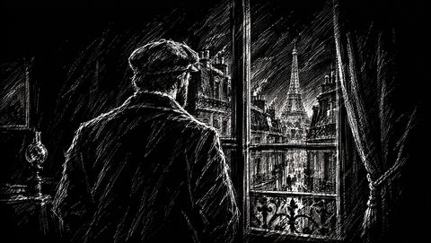 | מול החלון: מעבר לכתפו של הרבי הצעיר נשקפים מהחלון גגות פריז ומגדל אייפל. | הרבי הצעיר | 🔁 החלפת דמות בלבד | אין |
| 20.10.26 זום 20.10.26 13:12, נדב מעביר את בקשת יגאל (התמלול משובש); הנחיית 9.11: ציורי המאיירת מחליפים את הדמויות האלה (לא אומת בתמלול) |
| 19 5:11 | 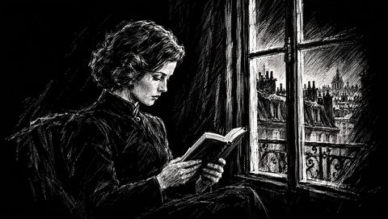 | קוראת ליד החלון: הרבנית חיה מושקה יושבת וקוראת בספר ליד חלון הפונה אל גגות פריז. | חיה מושקה | 🔁 החלפת דמות בלבד | אין |
| 20.10.26 זום 20.10.26 13:12, נדב מעביר את בקשת יגאל (התמלול משובש); הנחיית 9.11: ציורי המאיירת מחליפים את הדמויות האלה (לא אומת בתמלול) |
| 20 5:14 עד 5:18 | 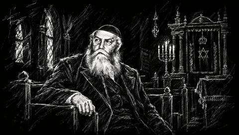 | האדמו"ר השישי: האדמו"ר השישי יושב בכורסה בבית הכנסת, ומאחוריו ארון הקודש ופמוט דולק. | הריי"צ | 🔁 החלפת דמות בלבד | הריי"צ: "דומה". נאמר שזו העבודה הכי טובה בסט. רפרנס מאושר. |
| 14.10.26 שיחת תיקונים עם יגאל, 14.10.26 20.10.26 זום 20.10.26 13:12, נדב מעביר את בקשת יגאל (התמלול משובש); הנחיית 9.11: ציורי המאיירת מחליפים את הדמויות האלה (לא אומת בתמלול) |
| 21 5:24 | 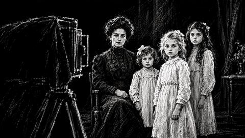 | המשפחה מול המצלמה: האם ושלוש הבנות של משפחת האדמו"ר השישי ניצבות, בשמלות בהירות, מול מצלמה על חצובה. | חיה מושקה (לא ודאי) נחמה דינה (האם) שתי אחיותיה של חיה מושקההערות על הדמויות
| ❓ לא ברור | אין |
| אין הערה |
| 23 5:40 | 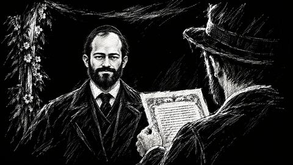 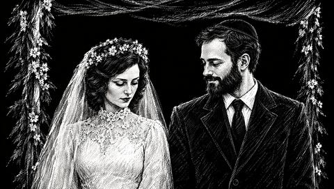 | החתן תחת החופה: הרבי הצעיר עומד תחת החופה, ומולו גבר במגבעת קורא מתוך הכתובה. הכלה והחתן: לצדו עומדת חיה מושקה בהינומה ובזר פרחים, עיניה מושפלות, והוא מביט בה. | הרבי הצעיר חיה מושקה | 🔁✏️ החלפת דמות והערה | 23/א (תחת החופה): הצעיר הכי קרוב לעצמו. רפרנס מאושר. |
| 14.10.26 שיחת תיקונים עם יגאל, 14.10.26 20.10.26 זום 20.10.26 13:12, נדב מעביר את בקשת יגאל (התמלול משובש); הנחיית 9.11: ציורי המאיירת מחליפים את הדמויות האלה (לא אומת בתמלול) |
| 25 5:49 | 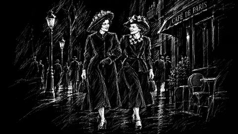 | ברחובות פריז: הרבנית וחברה, בכובעים מקושטים, צועדות בלילה ליד בית קפה פריזאי ומחייכות זו אל זו. | חיה מושקה חברה | 🔁✏️ החלפת דמות והערה | אין |
| 14.10.26 שיחת תיקונים עם יגאל, 14.10.26 20.10.26 זום 20.10.26 13:12, נדב מעביר את בקשת יגאל (התמלול משובש); הנחיית 9.11: ציורי המאיירת מחליפים את הדמויות האלה (לא אומת בתמלול) |
| 27 6:05 |  | ההזמנה לחתונה: שתי ידיים שולפות מן המעטפה את ההזמנה לחתונה, כתובה בעברית. | אין דמות מזוהה | ✅ מאושר, בלי דמות להחלפה | לא נדון בשיחה של 14.10 (מאושר בשתיקה לפי החלטת איתן מ-13.10: מה שלא קיבל הערה, מאושר). | אין | אין הערה |
| 28 6:10 |  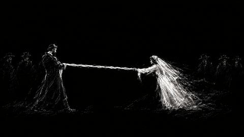 | הידיים על החבל: שתי ידי החתן לופתות את החבל ומושכות אותו. החבל נמתח: החבל נמתח בין החתן לכלה, העומדים רחוקים זה מזה בלב החשכה. | הרבי הצעיר חיה מושקההערות על הדמויות
| 🔁✏️ החלפת דמות והערה | 28/א (הידיים על החבל): "אהבתי מאוד". |
| 14.10.26 שיחת תיקונים עם יגאל, 14.10.26 20.10.26 זום 20.10.26 13:12, נדב מעביר את בקשת יגאל (התמלול משובש); הנחיית 9.11: ציורי המאיירת מחליפים את הדמויות האלה (לא אומת בתמלול) |
| 29 6:20 | 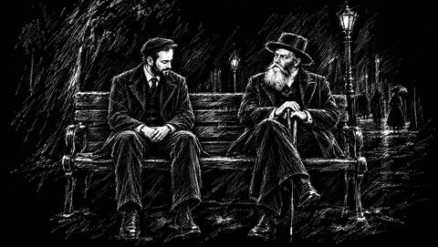 | על ספסל בפריז: הרבי הצעיר והאדמו"ר השישי יושבים זה לצד זה על ספסל בגן, בלילה. | הרבי הצעיר הריי"צ | 🔁 החלפת דמות בלבד | אין |
| 20.10.26 זום 20.10.26 13:12, נדב מעביר את בקשת יגאל (התמלול משובש); הנחיית 9.11: ציורי המאיירת מחליפים את הדמויות האלה (לא אומת בתמלול) |
| 30 6:31 | 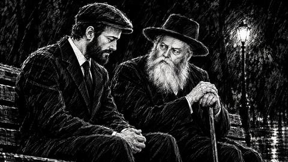 | שיחה על הספסל: האדמו"ר השישי נשען על מקלו ומדבר, והרבי הצעיר מרכין אליו את ראשו ומקשיב. | הרבי הצעיר הריי"צ | 🔁✏️ החלפת דמות והערה | אהב את הרצף של פריז והשיחות. |
| 14.10.26 שיחת תיקונים עם יגאל, 14.10.26 20.10.26 זום 20.10.26 13:12, נדב מעביר את בקשת יגאל (התמלול משובש); הנחיית 9.11: ציורי המאיירת מחליפים את הדמויות האלה (לא אומת בתמלול) |
| 31 6:35 | 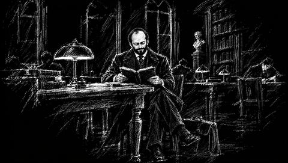 | בספריית האוניברסיטה: באולם הקריאה של האוניברסיטה יושב הרבי הצעיר וקורא בספר, לאור מנורת שולחן. | הרבי הצעיר | 🔁✏️ החלפת דמות והערה | אין |
| 14.10.26 שיחת תיקונים עם יגאל, 14.10.26 20.10.26 זום 20.10.26 13:12, נדב מעביר את בקשת יגאל (התמלול משובש); הנחיית 9.11: ציורי המאיירת מחליפים את הדמויות האלה (לא אומת בתמלול) |
| 32 6:37 | 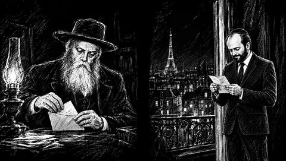 | מכתב נשלח, מכתב נקרא: האדמו"ר השישי חותם מכתב במעטפה לאור עששית, ובצדה השני של התמונה הרבי קורא אותו ליד חלון בפריז. | הרבי הצעיר הריי"צ | 🔁 החלפת דמות בלבד | אין |
| 20.10.26 זום 20.10.26 13:12, נדב מעביר את בקשת יגאל (התמלול משובש); הנחיית 9.11: ציורי המאיירת מחליפים את הדמויות האלה (לא אומת בתמלול) |
| 33 6:47 | 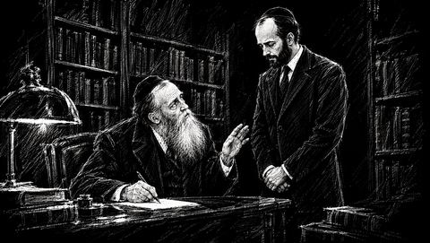 | האדמו"ר מפציר: האדמו"ר השישי כותב ליד שולחנו ומרים יד אל הרבי הצעיר, העומד לצדו בראש מורכן. | הרבי הצעיר הריי"צ | 🔁 החלפת דמות בלבד | אין |
| 14.10.26 שיחת תיקונים עם יגאל, 14.10.26 (לא אומת בתמלול) 13.10.26 החלטות איתן, 13.10.26 (ROADMAP) 20.10.26 זום 20.10.26 13:12, נדב מעביר את בקשת יגאל (התמלול משובש); הנחיית 9.11: ציורי המאיירת מחליפים את הדמויות האלה (לא אומת בתמלול) |
| 34 6:56 | 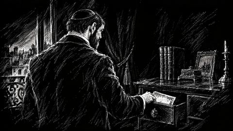 | המכתב במגירה: ליד חלון הפונה אל העיר, הרבי מכניס את המכתב למגירת שולחנו. | הרבי הצעיר | 🔁✏️ החלפת דמות והערה | אין |
| 14.10.26 שיחת תיקונים עם יגאל, 14.10.26 20.10.26 זום 20.10.26 13:12, נדב מעביר את בקשת יגאל (התמלול משובש); הנחיית 9.11: ציורי המאיירת מחליפים את הדמויות האלה (לא אומת בתמלול) |
| 35 7:04 | מוקף חסידים: חסידים מקיפים את הרבי הצעיר ומפצירים בו בתנועות ידיים, והוא עומד ביניהם ומבטו נעוץ קדימה. | הרבי הצעיר חסידים | 🔁✏️ החלפת דמות והערה | אין |
| 14.10.26 שיחת תיקונים עם יגאל, 14.10.26 20.10.26 זום 20.10.26 13:12, נדב מעביר את בקשת יגאל (התמלול משובש); הנחיית 9.11: ציורי המאיירת מחליפים את הדמויות האלה (לא אומת בתמלול) | |
| 36 7:22 | 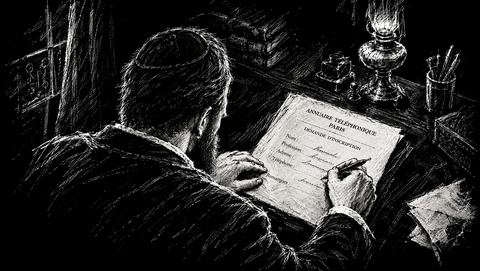 | ספר הטלפונים: מעבר לכתפו נראה הרבי ממלא בעט טופס רישום לספר הטלפונים של פריז. | הרבי הצעיר | 🔁 החלפת דמות בלבד | אין |
| 20.10.26 זום 20.10.26 13:12, נדב מעביר את בקשת יגאל (התמלול משובש); הנחיית 9.11: ציורי המאיירת מחליפים את הדמויות האלה (לא אומת בתמלול) |
| 38 7:31 |  | מפריז לניו יורק: קו מקווקו חוצה את האוקיינוס האטלנטי על המפה, מפריז אל ניו יורק. | אין דמות מזוהה | ✅ מאושר, בלי דמות להחלפה | לא נדון בשיחה של 14.10 (מאושר בשתיקה לפי החלטת איתן מ-13.10: מה שלא קיבל הערה, מאושר). | אין | אין הערה |
| 39 7:41 | 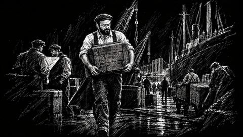 | נמל ברוקלין: בכובע מצחייה ובכתפיות, הרבי נושא ארגז עץ על רציף הנמל, בין פועלים, מנופים ואוניות. | הרבי הצעיר | 🔁 החלפת דמות בלבד | אין |
| 20.10.26 זום 20.10.26 13:12, נדב מעביר את בקשת יגאל (התמלול משובש); הנחיית 9.11: ציורי המאיירת מחליפים את הדמויות האלה (לא אומת בתמלול) |
| 40 7:52 |  | מצבת האב: מצבת אבן ועליה מגן דוד והשם ר' לוי יצחק, אבי הרבי. | אין דמות מזוהה | ✅ מאושר, בלי דמות להחלפה | לא נדון בשיחה של 14.10 (מאושר בשתיקה לפי החלטת איתן מ-13.10: מה שלא קיבל הערה, מאושר). | אין | אין הערה |
| 42 7:55 | 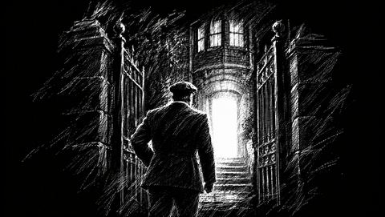 | הכניסה לחצר: צללית הרבי, בכובע מצחייה, עוברת בשער ברזל פתוח ועולה במדרגות אל פתח מואר. | הרבי הצעיר | 🔁 החלפת דמות בלבד | אין |
| 20.10.26 זום 20.10.26 13:12, נדב מעביר את בקשת יגאל (התמלול משובש); הנחיית 9.11: ציורי המאיירת מחליפים את הדמויות האלה (לא אומת בתמלול) |
| 43 8:07 | 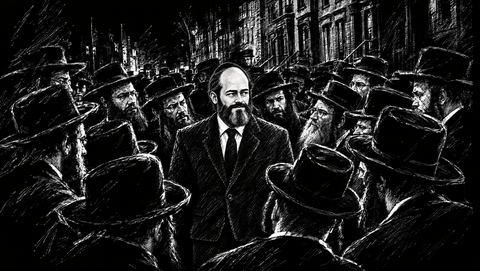 | בין החסידים בברוקלין: בחליפה ובעניבה, הרבי עומד בלב קהל צפוף של חסידים במגבעות שחורות ברחוב בברוקלין. | הרבי בגיל הביניים חסידיםהערות על הדמויות
| 🔁✏️ החלפת דמות והערה | אין |
| 14.10.26 שיחת תיקונים עם יגאל, 14.10.26 9.11.26 הנחיית המשימה: גם רבי בגיל הביניים שיגאל סימן נחשב להחלפה (לא אומת בתמלול) |
| 44 8:10 עד 8:18 |  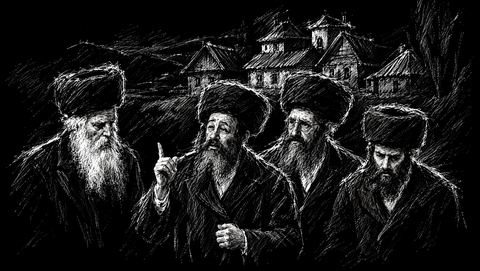 | יום שוק בעיירה: שלושה יהודים במעילים ארוכים ובמגבעות בוררים תוצרת ליד דוכן בשוק. חסידים בעיירה: ארבעה חסידים בכובעי פרווה משוחחים בשולי עיירה של בתי עץ, ואחד מהם מרים אצבע. | חסידים | ✅ מאושר, בלי דמות להחלפה | לא נדון בשיחה של 14.10 (מאושר בשתיקה לפי החלטת איתן מ-13.10: מה שלא קיבל הערה, מאושר). | אין | אין הערה |
| 45 8:19 עד 8:20 |  | הבעל שם טוב: הבעל שם טוב, בכובע פרווה, מדבר אל חסידיו היושבים סביבו לאור נרות. | הבעל שם טוב | ✅ מאושר, בלי דמות להחלפה | מאושר (הבעל שם טוב). | אין | 14.10.26 שיחת תיקונים עם יגאל, 14.10.26 (לא אומת בתמלול) |
| 46 8:38 עד 8:45 |  | יורד מן האונייה: האדמו"ר השישי, נראה מגבו, יורד בכבש האונייה אל קהל חסידים הממתין לו על הרציף בניו יורק. | הריי"צ | 🔁 החלפת דמות בלבד | אין |
| 20.10.26 זום 20.10.26 13:12, נדב מעביר את בקשת יגאל (התמלול משובש); הנחיית 9.11: ציורי המאיירת מחליפים את הדמויות האלה (לא אומת בתמלול) |
| 47 8:43 | 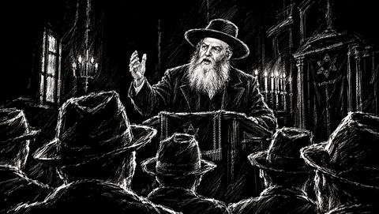 | נאום האדמו"ר השישי: מעל הדוכן בבית הכנסת נואם האדמו"ר השישי, ידו מורמת, והקהל מקשיב לו. | הריי"צ | 🔁 החלפת דמות בלבד | מאושר (נאום האדמו"ר השישי). |
| 14.10.26 שיחת תיקונים עם יגאל, 14.10.26 (לא אומת בתמלול) 20.10.26 זום 20.10.26 13:12, נדב מעביר את בקשת יגאל (התמלול משובש); הנחיית 9.11: ציורי המאיירת מחליפים את הדמויות האלה (לא אומת בתמלול) |
| 48 8:56 עד 8:58 | 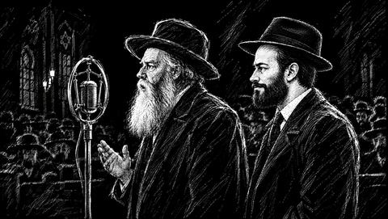 | המיקרופון הישן: האדמו"ר השישי מדבר אל מיקרופון ישן, ולצדו עומד הרבי ומקשיב. | הריי"צ הרבי הצעירהערות על הדמויות
| 🔁 החלפת דמות בלבד | "הרבה יותר דומה לעצמו" (המיקרופון הישן). רפרנס מאושר. |
| 14.10.26 שיחת תיקונים עם יגאל, 14.10.26 20.10.26 זום 20.10.26 13:12, נדב מעביר את בקשת יגאל (התמלול משובש); הנחיית 9.11: ציורי המאיירת מחליפים את הדמויות האלה (לא אומת בתמלול) |
| 49 9:21 עד 9:25 | 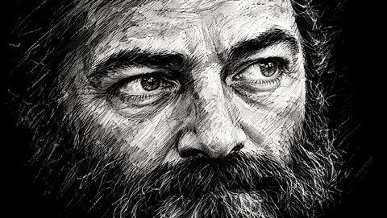 | עיני הרבי: פני הרבי מקרוב מאוד, ועיניו מביטות הצידה. | הרבי בגיל הביניים (לא סומן)הערות על הדמויות
| ✏️ הערה של יגאל בלבד | אהב את השוט. |
| 14.10.26 שיחת תיקונים עם יגאל, 14.10.26 |
| 50 9:26 עד 9:35 | 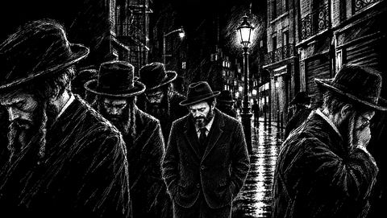 | אבל ברחוב: בראש מורכן וידיו בכיסיו, הרבי הולך בין חסידים אבלים ברחוב לילי, ואחד מהם מכסה את פניו. | הרבי בגיל הביניים (לא סומן) חסידיםהערות על הדמויות
| ✅ מאושר, בלי דמות להחלפה | לא נדון בשיחה של 14.10 (מאושר בשתיקה לפי החלטת איתן מ-13.10: מה שלא קיבל הערה, מאושר). | אין | אין הערה |
| 51 9:36 עד 9:41 | 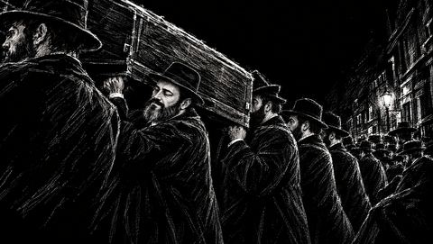 | הארון נישא ברחוב: חסידים נושאים על כתפיהם את ארונו של האדמו"ר השישי לאורך הרחוב, בלילה. | אין דמות מזוהה | ✅ מאושר, בלי דמות להחלפה | לא נדון בשיחה של 14.10 (מאושר בשתיקה לפי החלטת איתן מ-13.10: מה שלא קיבל הערה, מאושר). | אין | אין הערה |
| 52 9:47 עד 9:50 | 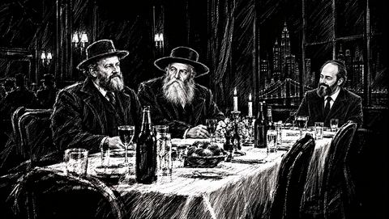 | השולחן ושני החתנים: ליד שולחן ערוך יושבים הרב גוראריה והאדמו"ר השישי, ובקצהו הרחוק יושב הרבי. | הריי"צ הרב גוראריה הרבי בגיל הביניים (לא סומן)הערות על הדמויות
| 🔁 החלפת דמות בלבד | אין |
| 20.10.26 זום 20.10.26 13:12, נדב מעביר את בקשת יגאל (התמלול משובש); הנחיית 9.11: ציורי המאיירת מחליפים את הדמויות האלה (לא אומת בתמלול) |
| 53 9:56 עד 10:02 | 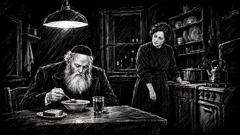 | ארוחה במטבח: האדמו"ר השישי אוכל מרק ליד שולחן המטבח, ואשתו, הרבנית נחמה דינה, עומדת ליד הכיריים ומביטה בו. | הריי"צ נחמה דינה (אשת הריי"צ) | 🔁 החלפת דמות בלבד | אין |
| 20.10.26 זום 20.10.26 13:12, נדב מעביר את בקשת יגאל (התמלול משובש); הנחיית 9.11: ציורי המאיירת מחליפים את הדמויות האלה (לא אומת בתמלול) |
| 54 10:18 | 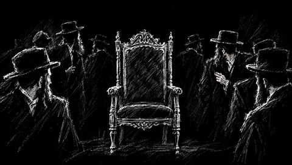 | הכיסא הריק: כיסא מגולף עומד ריק, וסביבו צלליות של חסידים המביטים לצדדים. | אין דמות מזוהה | ✅ מאושר, בלי דמות להחלפה | לא נדון בשיחה של 14.10 (מאושר בשתיקה לפי החלטת איתן מ-13.10: מה שלא קיבל הערה, מאושר). | אין | אין הערה |
| 55 10:22 עד 10:24 | 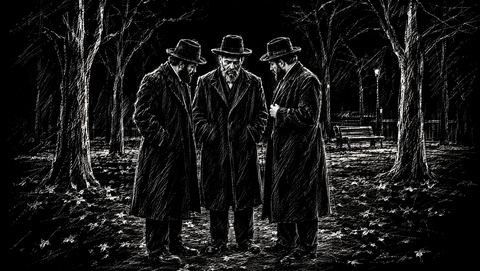 | שיחה בין העצים: שלושה גברים במגבעות ובמעילים ארוכים עומדים צמודים ומשוחחים בין עצי הגן, בלילה. | הרב גוראריה שני חסידיםהערות על הדמויות
| 🔁 החלפת דמות בלבד | אין |
| 20.10.26 זום 20.10.26 13:12, נדב מעביר את בקשת יגאל (התמלול משובש); הנחיית 9.11: ציורי המאיירת מחליפים את הדמויות האלה (לא אומת בתמלול) |
| 56 10:30 עד 10:36 | 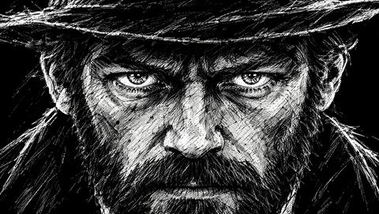 | מבט ישיר: פני הרבי ממלאים את התמונה, ועיניו נעוצות היישר קדימה מתחת לשולי המגבעת. | הרבי בגיל הביניים (לא סומן)הערות על הדמויות
| ✅ מאושר, בלי דמות להחלפה | "סבבה באמת" (מבט ישיר). בתמלול נכתב "הרייץ", כנראה שיבוש של "הרבי". | אין | 14.10.26 שיחת תיקונים עם יגאל, 14.10.26 |
| 57 10:38 עד 10:40 | 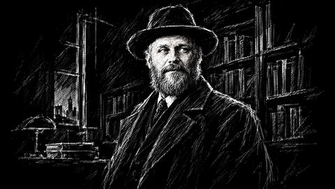 | הרב גוראריה: הרב גוראריה, במגבעת ובמעיל, עומד בחדר ספרים ומביט הצידה. | הרב גוראריה | 🔁 החלפת דמות בלבד | אין |
| 20.10.26 זום 20.10.26 13:12, נדב מעביר את בקשת יגאל (התמלול משובש); הנחיית 9.11: ציורי המאיירת מחליפים את הדמויות האלה (לא אומת בתמלול) |
| 59 10:54 עד 11:02 | 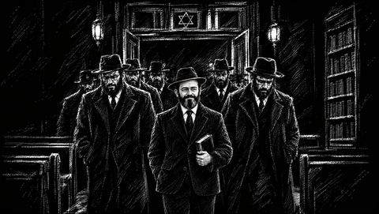 | חוזר עם החסידים: ספר בידו, הרבי נכנס אל בית הכנסת, ומאחוריו צועדת קבוצת חסידים. | הרבי בגיל הביניים (לא סומן) חסידיםהערות על הדמויות
| ✅ מאושר, בלי דמות להחלפה | לא נדון בשיחה של 14.10 (מאושר בשתיקה לפי החלטת איתן מ-13.10: מה שלא קיבל הערה, מאושר). | אין | אין הערה |
| 60 11:06 עד 11:08 | 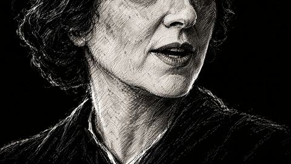 | שיחה בבית: הרבי מרים את עיניו מן הספר הפתוח אל הרבנית, וחיוך קל על פניו. | הרבי בגיל הביניים חיה מושקההערות על הדמויות
| 🔁✏️ החלפת דמות והערה | אין |
| 14.10.26 שיחת תיקונים עם יגאל, 14.10.26 20.10.26 זום 20.10.26 13:12, נדב מעביר את בקשת יגאל (התמלול משובש); הנחיית 9.11: ציורי המאיירת מחליפים את הדמויות האלה (לא אומת בתמלול) 9.11.26 הנחיית המשימה: גם רבי בגיל הביניים שיגאל סימן נחשב להחלפה (לא אומת בתמלול) |
| 61 11:11 עד 11:19 | החסידים שרים: הרבי יושב ליד שולחן ומיקרופון ועיניו מושפלות, ומאחוריו חסידים שרים בקול. | הרבי בגיל הביניים (לא סומן) חסידיםהערות על הדמויות
| ✅ מאושר, בלי דמות להחלפה | לא נדון בשיחה של 14.10 (מאושר בשתיקה לפי החלטת איתן מ-13.10: מה שלא קיבל הערה, מאושר). | אין | אין הערה | |
| 62 11:22 עד 11:27 | הרב גוראריה בצד: הרב גוראריה עומד לבדו ומשפיל את מבטו, והקהל שמאחוריו מפנה אליו את גבו. | הרב גוראריה | 🔁 החלפת דמות בלבד | אין |
| 20.10.26 זום 20.10.26 13:12, נדב מעביר את בקשת יגאל (התמלול משובש); הנחיית 9.11: ציורי המאיירת מחליפים את הדמויות האלה (לא אומת בתמלול) | |
| 63 12:04 עד 12:13 | חסידים חוגגים: חסידים צעירים שרים וחוגגים, זרוע על כתף, בתוך קהל צפוף. | חסידים | ✅ מאושר, בלי דמות להחלפה | לא נדון בשיחה של 14.10 (מאושר בשתיקה לפי החלטת איתן מ-13.10: מה שלא קיבל הערה, מאושר). | אין | אין הערה | |
| 64 12:27 עד 12:29 |  | שפתי הרבי: שפתי הרבי מקרוב, פתוחות בדיבור בתוך הזקן. | הרבי בגיל הביניים (לא סומן)הערות על הדמויות
| ✅ מאושר, בלי דמות להחלפה | לא נדון בשיחה של 14.10 (מאושר בשתיקה לפי החלטת איתן מ-13.10: מה שלא קיבל הערה, מאושר). | אין | אין הערה |
| 66 13:11 עד 13:16 | שוב מול המראה: מול המראה, הרבי מניח את המגבעת על ראשו בשתי ידיו. | הרבי בגיל הביניים (לא סומן)הערות על הדמויות
| ✅ מאושר, בלי דמות להחלפה | לא נדון בשיחה של 14.10 (מאושר בשתיקה לפי החלטת איתן מ-13.10: מה שלא קיבל הערה, מאושר). | אין | אין הערה | |
| 67 13:30 עד 13:33 | הרבנית בצדודית: הרבנית, בכובע, עומדת בחדר חשוך ומביטה אל האור שבחלון. | חיה מושקה | 🔁 החלפת דמות בלבד | אין |
| 20.10.26 זום 20.10.26 13:12, נדב מעביר את בקשת יגאל (התמלול משובש); הנחיית 9.11: ציורי המאיירת מחליפים את הדמויות האלה (לא אומת בתמלול) | |
| 68 13:38 עד 13:41 | בין שורות הנשים: נשים בכובעים ובמטפחות יושבות משני צדי המעבר ופונות אל הרבי, הצועד ביניהן בגבו אל הצופה. | הרבי בגיל הביניים (לא סומן)הערות על הדמויות
| ✅ מאושר, בלי דמות להחלפה | לא נדון בשיחה של 14.10 (מאושר בשתיקה לפי החלטת איתן מ-13.10: מה שלא קיבל הערה, מאושר). | אין | אין הערה | |
| 69 13:47 עד 13:52 | נואם לפני הנשים: הרבי נואם מעל הדוכן, והנשים יושבות ומקשיבות לו. | הרבי בגיל הביניים (לא סומן)הערות על הדמויות
| ✅ מאושר, בלי דמות להחלפה | לא נדון בשיחה של 14.10 (מאושר בשתיקה לפי החלטת איתן מ-13.10: מה שלא קיבל הערה, מאושר). | אין | אין הערה | |
| 70 13:57 עד 13:59 | יוצא מן האולם: בחיוך פוסע הרבי החוצה, ומאחוריו הנשים עומדות ומוחאות כפיים. | הרבי בגיל הביניים (לא סומן)הערות על הדמויות
| ✅ מאושר, בלי דמות להחלפה | לא נדון בשיחה של 14.10 (מאושר בשתיקה לפי החלטת איתן מ-13.10: מה שלא קיבל הערה, מאושר). | אין | אין הערה | |
| 71 14:08 | כוס תה: הרבי והרבנית יושבים זה מול זה ליד שולחן עגול, וביניהם קומקום ושתי כוסות תה. | הרבי בגיל הביניים (לא סומן) חיה מושקההערות על הדמויות
| 🔁 החלפת דמות בלבד | אין |
| 20.10.26 זום 20.10.26 13:12, נדב מעביר את בקשת יגאל (התמלול משובש); הנחיית 9.11: ציורי המאיירת מחליפים את הדמויות האלה (לא אומת בתמלול) | |
| 73 14:18 עד 14:22 | מביט מן הצד: הרב גוראריה מביט מן הצד ברבי, שחסידים מקיפים אותו ולוחצים את ידו. | הרב גוראריה הרבי בגיל הביניים (לא סומן) חסידיםהערות על הדמויות
| 🔁 החלפת דמות בלבד | אין |
| 20.10.26 זום 20.10.26 13:12, נדב מעביר את בקשת יגאל (התמלול משובש); הנחיית 9.11: ציורי המאיירת מחליפים את הדמויות האלה (לא אומת בתמלול) | |
| 74 14:23 עד 14:27 | ליד המיקרופונים: ליד שולחן ומיקרופונים מרכין הרב גוראריה את ראשו לצד הרבי המחייך, וחסידים עומדים מאחוריהם. | הרב גוראריה הרבי בגיל הביניים (לא סומן)הערות על הדמויות
| 🔁 החלפת דמות בלבד | אין |
| 20.10.26 זום 20.10.26 13:12, נדב מעביר את בקשת יגאל (התמלול משובש); הנחיית 9.11: ציורי המאיירת מחליפים את הדמויות האלה (לא אומת בתמלול) | |
| 75 14:28 עד 14:30 | לחיצת היד: הרב גוראריה והרבי לוחצים ידיים ומחייכים זה אל זה, והחסידים מביטים בהם. | הרב גוראריה הרבי בגיל הביניים (לא סומן)הערות על הדמויות
| 🔁 החלפת דמות בלבד | אין |
| 20.10.26 זום 20.10.26 13:12, נדב מעביר את בקשת יגאל (התמלול משובש); הנחיית 9.11: ציורי המאיירת מחליפים את הדמויות האלה (לא אומת בתמלול) | |
| 76 14:50 עד 14:59 | הכניסה אל האולם: בדלת בית הכנסת נכנס הרבי, והרבנים יושבים ליד השולחן וממתינים לו. נאום ההכתרה: הרבי מדבר אל המיקרופון ליד שולחן ארוך, ורבנים קשישים יושבים סביבו ומקשיבים. | הרבי בגיל הביניים (לא סומן) רבניםהערות על הדמויות
| ✅ מאושר, בלי דמות להחלפה | 76/ב (נאום ההכתרה): "יחסית דומה לעצמו", כולל הקלוז אפ. רפרנס מאושר. גם המעבר לצבע סביב ההכתרה: "מאוד אוהב את האפסקיילינג". | אין | 14.10.26 שיחת תיקונים עם יגאל, 14.10.26 | |
| 77 15:04 עד 15:10 | קשירת המטפחת: שתי ידיים כורכות מטפחת לבנה סביב כף היד וקושרות אותה, מעל ספר פתוח. | הרבי בגיל הביניים (לא ודאי) (לא סומן)הערות על הדמויות
| ✏️ הערה של יגאל בלבד | אין |
| 14.10.26 שיחת תיקונים עם יגאל, 14.10.26 | |
| 78 15:22 | הדור השביעי: הרבי נואם מעל הדוכן בבית הכנסת, וידו מושטת אל הקהל. הקהל עונה: מקצה האולם נראה הקהל כולו מרים ידיים, והרבי קטן ורחוק ליד הדוכן. | הרבי בגיל הביניים (לא סומן)הערות על הדמויות
| ✅ מאושר, בלי דמות להחלפה | לא נדון בשיחה של 14.10 (מאושר בשתיקה לפי החלטת איתן מ-13.10: מה שלא קיבל הערה, מאושר). | אין | אין הערה | |
| 79 15:53 עד 16:06 | מול הקהל הגדול: ליד הדוכן, בגבו אל הצופה, עומד הרבי מול בית כנסת מלא חסידים עד היציעים. | הרבי בגיל הביניים (לא סומן)הערות על הדמויות
| ✅ מאושר, בלי דמות להחלפה | לא נדון בשיחה של 14.10 (מאושר בשתיקה לפי החלטת איתן מ-13.10: מה שלא קיבל הערה, מאושר). | אין | אין הערה | |
| 80 16:14 עד 16:28 |  | חסידים בכל העולם: מפת עולם שעליה קבוצות חסידים ביבשות השונות, וקווים מחברים אותן אל ניו יורק. | אין דמות מזוהה | ✅ מאושר, בלי דמות להחלפה | לא נדון בשיחה של 14.10 (מאושר בשתיקה לפי החלטת איתן מ-13.10: מה שלא קיבל הערה, מאושר). | אין | אין הערה |
| 82 17:10 | הרצועה על הזרוע: הרצועה נכרכת על זרוע הצעיר, והרחוב סביבם מלא חסידים. הרבי מדבר ברחוב: הרבי מדבר אל החסידים המקיפים אותו ברחוב ומלווה את דבריו בתנועת יד. | הרבי בגיל הביניים חסידיםהערות על הדמויות
| 🔁✏️ החלפת דמות והערה | אין |
| 14.10.26 שיחת תיקונים עם יגאל, 14.10.26 9.11.26 הנחיית המשימה: גם רבי בגיל הביניים שיגאל סימן נחשב להחלפה (לא אומת בתמלול) | |
| 84 17:35 עד 17:42 | נכנס בין החסידים: בין שתי שורות חסידים פוסע הרבי ומניף את ידו, והם מוחאים לו כפיים. | הרבי הזקן חסידים | ✅ מאושר, בלי דמות להחלפה | דומה, זקן לבן. "הקטע של הכניסה פנטסטי". רפרנס מאושר. | אין | 14.10.26 שיחת תיקונים עם יגאל, 14.10.26 | |
| 86 20:41 עד 20:52 |   | היד המורמת: הרבי מרים כף יד פתוחה אל החסידים העומדים סביבו ברחוב ומדבר אליהם. הרבי מדבר, מקרוב: פיו של הרבי וזקנו הלבן מקרוב, באמצע דיבור, בין מגבעות החסידים. | הרבי הזקן חסידים | ✅ מאושר, בלי דמות להחלפה | 86/ב (הרבי מדבר, מקרוב): "זה יפה". רפרנס מאושר. | אין | 14.10.26 שיחת תיקונים עם יגאל, 14.10.26 |
| 87 20:56 עד 20:58 | טנק מול טנק: רכב מבצעים של חב"ד חונה בשדה מול טנק, וביניהם חסיד מניח תפילין לחייל. | חיילי צה"ל חסיד | ✅ מאושר, בלי דמות להחלפה | מאושר (טנק מול טנק, מבצעי חב"ד). | אין | 14.10.26 שיחת תיקונים עם יגאל, 14.10.26 | |
| 88 21:55 עד 22:14 |  | ופרצת, מול הקהל: בקצה האולם עומד הרבי על הבימה וזרועותיו מונפות, והקהל ממלא את בית הכנסת מקיר לקיר. | הרבי הזקן | ✅ מאושר, בלי דמות להחלפה | לא נדון בשיחה של 14.10 (מאושר בשתיקה לפי החלטת איתן מ-13.10: מה שלא קיבל הערה, מאושר). | אין | אין הערה |
| 89 21:56 |  | הקהל שר: החסידים שרים בראש מורם ובאגרופים מונפים, חבוקים זה בזה, והיציעים מעליהם מלאים. | אין דמות מזוהה | ✅ מאושר, בלי דמות להחלפה | לא נדון בשיחה של 14.10 (מאושר בשתיקה לפי החלטת איתן מ-13.10: מה שלא קיבל הערה, מאושר). | אין | אין הערה |
| 90 22:30 עד 22:33 | שתי מנורות: מצד אחד מנורת סמל המדינה בין ענפי הזית, ומהצד האחר מנורת חב"ד דולקת בבית הכנסת. | אין דמות מזוהה | ✅ מאושר, בלי דמות להחלפה | לא נדון בשיחה של 14.10 (מאושר בשתיקה לפי החלטת איתן מ-13.10: מה שלא קיבל הערה, מאושר). | אין | אין הערה | |
| 91 22:39 עד 22:47 |  | בין הילדים: הרבי פוסע במעבר, וילדים משני צדיו מושיטים אליו ידיים. היד המברכת: אל הילדים המתקבצים סביבו מרים הרבי את כף ידו. | הרבי הזקן ילדים | ✅ מאושר, בלי דמות להחלפה | "בין הילדים, הכל סבבה". | אין | 14.10.26 שיחת תיקונים עם יגאל, 14.10.26 |
| 92 22:48 עד 23:02 |  | ילדים שרים: ילדים בכיפות עומדים בין הספסלים, שרים בקול ומניפים ידיים. | ילדים | ✅ מאושר, בלי דמות להחלפה | לא נדון בשיחה של 14.10 (מאושר בשתיקה לפי החלטת איתן מ-13.10: מה שלא קיבל הערה, מאושר). | אין | אין הערה |
| 93 22:56 עד 23:02 |  | שירת הילדים: שורות של ילדים שרים ומוחאים כפיים בספסלי בית הכנסת. | ילדים | ✅ מאושר, בלי דמות להחלפה | לא נדון בשיחה של 14.10 (מאושר בשתיקה לפי החלטת איתן מ-13.10: מה שלא קיבל הערה, מאושר). | אין | אין הערה |
| 94 23:07 עד 23:11 |  | הרבי והילדים: בגבו אל הצופה, הרבי מניף את שתי זרועותיו מול אולם מלא ילדים שרים. | הרבי הזקן ילדים | ✅ מאושר, בלי דמות להחלפה | לא נדון בשיחה של 14.10 (מאושר בשתיקה לפי החלטת איתן מ-13.10: מה שלא קיבל הערה, מאושר). | אין | אין הערה |
| 98 24:21 עד 24:30 |  | חלוקת הדולרים: הרבי מושיט שטר של דולר לילדה, ומאחוריה ממתינים בתור נשים וילדים. מיד ליד: ידו של הרבי מניחה את השטר בכף ידה של הילדה. | הרבי הזקן נשים וילדים | ✅ מאושר, בלי דמות להחלפה | מאושר (הדולרים). | אין | 14.10.26 שיחת תיקונים עם יגאל, 14.10.26 |
| 100 24:56 עד 25:09 | אגרוף מונף: הרבי מניף אגרוף, ומאחוריו המון חסידים ממלא את הרחוב ומניף אגרופים אחריו. | הרבי הזקן חסידים | ✅ מאושר, בלי דמות להחלפה | לא נדון בשיחה של 14.10 (מאושר בשתיקה לפי החלטת איתן מ-13.10: מה שלא קיבל הערה, מאושר). | אין | אין הערה | |
| 101 25:15 עד 25:22 |  | הרב שך: הרב שך, במשקפיים ובמגבעת, מדבר אל מיקרופון ואצבעו מורמת. | הרב שך | ✏️ הערה של יגאל בלבד | אין |
| 14.10.26 שיחת תיקונים עם יגאל, 14.10.26 |
| 102 25:23 עד 25:42 |  | החסידים קופצים: מאחורי הרבי המוחא כפיים קופצות באוויר שורות של חסידים, לפי הקצב. | הרבי הזקן | ✅ מאושר, בלי דמות להחלפה | לא נדון בשיחה של 14.10 (מאושר בשתיקה לפי החלטת איתן מ-13.10: מה שלא קיבל הערה, מאושר). | אין | אין הערה |
| 103 25:44 עד 26:04 |  | שלט בשמיים: מטוס קל גורר בשמיים שלט צהוב ועליו הכתובת ביאת המשיח. | אין דמות מזוהה | ✅ מאושר, בלי דמות להחלפה | לא נדון בשיחה של 14.10 (מאושר בשתיקה לפי החלטת איתן מ-13.10: מה שלא קיבל הערה, מאושר). | אין | אין הערה |
| 105 26:19 עד 26:22 |  | אצבע מורמת: הרבי יושב ליד המיקרופונים ומרים אצבע, והחסידים מצטופפים סביבו ומקשיבים. | הרבי הזקן | ✅ מאושר, בלי דמות להחלפה | לא נדון בשיחה של 14.10 (מאושר בשתיקה לפי החלטת איתן מ-13.10: מה שלא קיבל הערה, מאושר). | אין | אין הערה |
| 106 26:29 עד 26:44 |  | שני האדמו"רים: האדמו"ר השישי והרבי הצעיר יושבים על ספסל בגן, בין עצי סתיו. | הרבי הצעיר הריי"צ | 🔁✏️ החלפת דמות והערה | אין |
| 14.10.26 שיחת תיקונים עם יגאל, 14.10.26 20.10.26 זום 20.10.26 13:12, נדב מעביר את בקשת יגאל (התמלול משובש); הנחיית 9.11: ציורי המאיירת מחליפים את הדמויות האלה (לא אומת בתמלול) |
| 107 26:49 עד 27:05 |   | כותבים פתקים: חסידים כותבים פתקים ברחוב, נשענים על קיר ועל מכסה מנוע, ואוספים אותם בשקית נייר. השקית בחלון הקדילק: חסידים מעבירים את שקית הפתקים דרך חלון הקדילק של הרבי. הפתקים באוהל: שלושה חסידים מרוקנים את השקית על קבר האדמו"ר השישי באוהל, המכוסה כולו פתקים. | הרבי הזקן (לא ודאי) | ✅ מאושר, בלי דמות להחלפה | "מעולה" (השקית בחלון הקדילק והפתקים באוהל). | אין | 14.10.26 שיחת תיקונים עם יגאל, 14.10.26 |
| 108 27:12 עד 27:48 | הקדילק ליד הבית: קדילק חומה חונה ברחוב מול בית לבנים אדומות, בין עצים עירומים. | אין דמות מזוהה | ✅ מאושר, בלי דמות להחלפה | לא נדון בשיחה של 14.10 (מאושר בשתיקה לפי החלטת איתן מ-13.10: מה שלא קיבל הערה, מאושר). | אין | אין הערה | |
| 109 27:49 עד 28:12 |  | הקדילק בדרך: הקדילק נוסעת ברחוב מושלג בברוקלין, בין בתי לבנים ועצים עירומים. יוצא מן הקדילק: הרבי יוצא מן הקדילק מול 770, וחסידים עומדים בשתי שורות משני צדי המדרכה. | הרבי הזקן | ✅ מאושר, בלי דמות להחלפה | לא נדון בשיחה של 14.10 (מאושר בשתיקה לפי החלטת איתן מ-13.10: מה שלא קיבל הערה, מאושר). | אין | אין הערה |
| 110 28:16 עד 28:24 | הרבי וילדים: הרבי רוכן בחיוך אל ארבעה ילדים המרימים אליו את עיניהם ברחוב. | הרבי הזקן ילדים | ✅ מאושר, בלי דמות להחלפה | מאושר (הרבי והילדים). | אין | 14.10.26 שיחת תיקונים עם יגאל, 14.10.26 | |
| 111 28:34 עד 28:54 |   | התור לדולר: נשים וילדות עומדות בתור, והרבי מושיט שטר לילדה קטנה שבראשו. שטר של דולר: יד מבוגרת מושיטה שטר של דולר ליד קטנה. | הרבי הזקן (לא ודאי) | ✅ מאושר, בלי דמות להחלפה | לא נדון בשיחה של 14.10 (מאושר בשתיקה לפי החלטת איתן מ-13.10: מה שלא קיבל הערה, מאושר). | אין | אין הערה |
| 112 28:54 עד 28:58 | הרבנית ליד החלון: הרבנית, בכובע ובמעיל, יושבת ליד החלון, סנטרה על ידה, ומביטה אל גגות ניו יורק. | חיה מושקה | 🔁✏️ החלפת דמות והערה | אין |
| 14.10.26 שיחת תיקונים עם יגאל, 14.10.26 20.10.26 זום 20.10.26 13:12, נדב מעביר את בקשת יגאל (התמלול משובש); הנחיית 9.11: ציורי המאיירת מחליפים את הדמויות האלה (לא אומת בתמלול) | |
| 113 29:11 עד 29:25 |  | ישעיהו ליבוביץ: ישעיהו ליבוביץ, בכיפה ובמשקפיים עגולים, יושב בכורסה בין מדפי ספרים ומדבר בתנועת יד. | ישעיהו ליבוביץ' | ✏️ הערה של יגאל בלבד | אין |
| 14.10.26 שיחת תיקונים עם יגאל, 14.10.26 |
| 114 29:35 עד 29:49 |  | צדודית ליד המיקרופון: הרבי בצדודית, עיניו מושפלות, ולפניו מיקרופון. | הרבי הזקן | ✅ מאושר, בלי דמות להחלפה | לא נדון בשיחה של 14.10 (מאושר בשתיקה לפי החלטת איתן מ-13.10: מה שלא קיבל הערה, מאושר). | אין | אין הערה |
| 116 30:16 עד 30:20 |  | דיוקן הרמב"ם: דיוקן הרמב"ם, במצנפת ובזקן כהה. | הרמב"ם | ✅ מאושר, בלי דמות להחלפה | לא נדון בשיחה של 14.10 (מאושר בשתיקה לפי החלטת איתן מ-13.10: מה שלא קיבל הערה, מאושר). | אין | אין הערה |
| 117 30:32 עד 30:38 |  | האצבע המורמת: הרבי מדבר אל המיקרופון ומרים אצבע, ומאחוריו ארון הקודש והקהל. הקהל מקשיב: החסידים יושבים בספסלים ופניהם אל ארון הקודש, ואחד מהם עומד ומרים יד. | הרבי הזקן | ✅ מאושר, בלי דמות להחלפה | לא נדון בשיחה של 14.10 (מאושר בשתיקה לפי החלטת איתן מ-13.10: מה שלא קיבל הערה, מאושר). | אין | אין הערה |
| 118 30:39 עד 30:46 | מן הצד: הרבי עומד ליד המיקרופון ומדבר, ידו מורמת, ומאחוריו הכיסא וארון הקודש. | הרבי הזקן | ✅ מאושר, בלי דמות להחלפה | לא נדון בשיחה של 14.10 (מאושר בשתיקה לפי החלטת איתן מ-13.10: מה שלא קיבל הערה, מאושר). | אין | אין הערה | |
| 119 30:46 עד 30:51 | רגע של מחשבה: פני הרבי מקרוב, מבטו מופנה הצידה ומטה. | הרבי הזקן | ✏️ הערה של יגאל בלבד | אין |
| 14.10.26 שיחת תיקונים עם יגאל, 14.10.26 | |
| 120 30:56 עד 30:59 | עטוף בטלית: הרבי עטוף בטלית מעל ראשו, ומאחוריו המתפללים בבית הכנסת. | הרבי הזקן | ✅ מאושר, בלי דמות להחלפה | לא נדון בשיחה של 14.10 (מאושר בשתיקה לפי החלטת איתן מ-13.10: מה שלא קיבל הערה, מאושר). | אין | אין הערה | |
| 121 31:06 עד 31:08 |  | עובר בין המתפללים: עטוף בטלית וספר בידו, הרבי עובר בין מתפללים עטופי טליתות. | הרבי הזקן | ✅ מאושר, בלי דמות להחלפה | לא נדון בשיחה של 14.10 (מאושר בשתיקה לפי החלטת איתן מ-13.10: מה שלא קיבל הערה, מאושר). | אין | אין הערה |
| 122 31:14 עד 31:18 |   | ליד הנרות: בגבו אל הצופה, הרבי קורא מספר ליד נרות דולקים, והחסידים עומדים סביבו. כיפת יחי: כיפה שחורה שעליה רקום יחי המלך המשיח, בין שתי מגבעות. | הרבי הזקן | ✅ מאושר, בלי דמות להחלפה | לא נדון בשיחה של 14.10 (מאושר בשתיקה לפי החלטת איתן מ-13.10: מה שלא קיבל הערה, מאושר). | אין | אין הערה |
| 124 31:39 עד 31:54 | שלושת הפוסקים: שלושה רבנים קשישים עומדים מול הרבי לרגלי מדרגות האבן, ואחד מהם מגיש לו דף. הדף בכיס: הרבי משפיל את עיניו ומכניס את הדף המקופל לכיס מעילו. | הרבי הזקן שלושה רבנים | ✅ מאושר, בלי דמות להחלפה | לא נדון בשיחה של 14.10 (מאושר בשתיקה לפי החלטת איתן מ-13.10: מה שלא קיבל הערה, מאושר). | אין | אין הערה | |
| 126 32:33 עד 32:40 |  | תצלומי הרבי: תצלומים של הרבי פזורים על שולחן בין מצלמות ומבזקים: בין חסידים, ליד מיקרופונים, בטלית. | הרבי הזקן (לא ודאי) | ✅ מאושר, בלי דמות להחלפה | לא נדון בשיחה של 14.10 (מאושר בשתיקה לפי החלטת איתן מ-13.10: מה שלא קיבל הערה, מאושר). | אין | אין הערה |
| 127 33:04 עד 33:09 |  | ליד המכונית: מלמעלה נראה הרבי הולך על המדרכה אל הקדילק שדלתה פתוחה, וחסידים עומדים משני צדיו ומביטים בו. | הרבי הזקן | ✅ מאושר, בלי דמות להחלפה | לא נדון בשיחה של 14.10 (מאושר בשתיקה לפי החלטת איתן מ-13.10: מה שלא קיבל הערה, מאושר). | אין | אין הערה |
| 128 33:11 עד 33:31 |  | חדר הבקרה: צלליות של אנשים יושבות מול קיר מסכים, ובמסכים נראים הרבי ליד הדוכן, ריאיון, פני ילדה ורחוב מושלג. | הרבי הזקן (לא ודאי) צופים בסילואטה | ✅ מאושר, בלי דמות להחלפה | לא נדון בשיחה של 14.10 (מאושר בשתיקה לפי החלטת איתן מ-13.10: מה שלא קיבל הערה, מאושר). | אין | אין הערה |
| 131 35:51 עד 36:04 |  | ריאיון בטלוויזיה: על מסך של מקלט טלוויזיה ישן מראיין אוחז מיקרופון מול הרבי. | הרבי הזקן | ✅ מאושר, בלי דמות להחלפה | לא נדון בשיחה של 14.10 (מאושר בשתיקה לפי החלטת איתן מ-13.10: מה שלא קיבל הערה, מאושר). | אין | אין הערה |
| 132 36:15 עד 36:24 |  | שלט בצד הכביש: שלט חוצות צהוב בצד כביש בישראל, ועליו פני הרבי והכתובת יחי המלך המשיח. מודעה ברחוב: כרזה צהובה עם פני הרבי והכתובת יחי המלך המשיח תלויה על קיר אבן ליד תחנת אוטובוס. | הרבי הזקן (לא ודאי) | ✅ מאושר, בלי דמות להחלפה | לא נדון בשיחה של 14.10 (מאושר בשתיקה לפי החלטת איתן מ-13.10: מה שלא קיבל הערה, מאושר). | אין | אין הערה |
| 133 36:40 עד 36:46 |    | קהל המתפללים: בית הכנסת מלא מתפללים עטופי טליתות, ובקצהו הרבי בטלית ליד ארון הקודש. בטלית, מקרוב: הרבי, עטוף בטלית, מביט אל הקהל מלפני פרוכת ארון הקודש. ליד הדוכן: ליד הדוכן המוגבה עומד הרבי בטלית, ומתחתיו קהל המתפללים. עם ספר התורה: ליד ארון הקודש הפתוח, הרבי אוחז ספר תורה בזרועותיו. ראשים מורכנים: שורות של מתפללים עטופי טליתות עומדות בראש מורכן. | הרבי הזקן | ✅ מאושר, בלי דמות להחלפה | לא נדון בשיחה של 14.10 (מאושר בשתיקה לפי החלטת איתן מ-13.10: מה שלא קיבל הערה, מאושר). | אין | אין הערה |
| 134 36:48 עד 37:02 | שזר מגיע אל 770: זלמן שזר ופמלייתו, במעילים ותיקים בידיהם, צועדים בשלג אל פתח 770, ושני חסידים ממתינים להם בדלת. | זלמן שזר ופמלייתו | ✅ מאושר, בלי דמות להחלפה | לא נדון בשיחה של 14.10 (מאושר בשתיקה לפי החלטת איתן מ-13.10: מה שלא קיבל הערה, מאושר). | אין | אין הערה | |
| 135 37:05 עד 37:14 | שזר והרבי: זלמן שזר לוחץ את ידו של הרבי בבית הכנסת, ולצדם עומדת גולדה מאיר. | הרבי הזקן זלמן שזר גולדה מאיר | ✅ מאושר, בלי דמות להחלפה | לא נדון בשיחה של 14.10 (מאושר בשתיקה לפי החלטת איתן מ-13.10: מה שלא קיבל הערה, מאושר). | אין | אין הערה | |
| 137 37:52 | לחיצת יד עם בגין: מנחם בגין והרבי לוחצים ידיים. לחיצת יד עם שרון: אריאל שרון רוכן מעט אל הרבי ולוחץ את ידו. לחיצת יד עם שמיר: יצחק שמיר לוחץ את ידו של הרבי ומחייך אליו. לחיצת יד עם רבין: יצחק רבין לוחץ את ידו של הרבי, ועיניו מושפלות. | הרבי הזקן מנחם בגין אריאל שרון יצחק שמיר יצחק רבין | ✏️ הערה של יגאל בלבד | אין |
| 14.10.26 שיחת תיקונים עם יגאל, 14.10.26 | |
| 140 38:48 עד 38:55 | אורח רוכן אל הרבי: גבר בחליפה רוכן מעל השולחן אל הרבי היושב ומדבר אליו, וחסידים עומדים מאחור ומקשיבים. | הרבי הזקן אורח (צ'חנובר או דיין) | ✅ מאושר, בלי דמות להחלפה | לא נדון בשיחה של 14.10 (מאושר בשתיקה לפי החלטת איתן מ-13.10: מה שלא קיבל הערה, מאושר). | אין | אין הערה | |
| 141 39:10 עד 39:30 | נתניהו נכנס: בנימין נתניהו, נראה מגבו, נכנס אל בית הכנסת המלא, והרבי יושב בקצהו ליד ארון הקודש. במעבר אל הרבי: נתניהו פוסע במעבר אל הרבי, והחסידים בספסלים מפנים אליו את ראשם. | הרבי הזקן בנימין נתניהו | ✅ מאושר, בלי דמות להחלפה | לא נדון בשיחה של 14.10 (מאושר בשתיקה לפי החלטת איתן מ-13.10: מה שלא קיבל הערה, מאושר). | אין | אין הערה | |
| 142 39:40 עד 39:49 | לחיצת יד עם נתניהו: בקדמת בית הכנסת, לעיני הקהל, נתניהו והרבי לוחצים ידיים. | הרבי הזקן בנימין נתניהו | ✅ מאושר, בלי דמות להחלפה | לא נדון בשיחה של 14.10 (מאושר בשתיקה לפי החלטת איתן מ-13.10: מה שלא קיבל הערה, מאושר). | אין | אין הערה | |
| 143 40:02 עד 40:11 | לחישה באוזן: נתניהו רוכן אל הרבי ולוחש באוזנו מאחורי כף ידו. הרבי עונה: הרבי משיב לו בתנועת יד, ונתניהו מרכין אליו את ראשו. | הרבי הזקן בנימין נתניהו | ✏️ הערה של יגאל בלבד | רגע הלחישה: "אהבתי מאוד". |
| 14.10.26 שיחת תיקונים עם יגאל, 14.10.26 | |
| 145 41:00 | צלליות חמושות: שורה של צלליות בכאפיות אוחזת ברובים בשדה פתוח, מול שמי דמדומים. | צלליות חמושות | ✏️ הערה של יגאל בלבד | אין |
| 14.10.26 שיחת תיקונים עם יגאל, 14.10.26 | |
| 147 41:18 עד 41:37 |    | לבד על הבימה: הרבי עומד לבדו על הבימה ליד המיקרופון וידו מונפת, וחסידים ראשונים מתקרבים באולם החשוך. היד המונפת: מקרוב נראה הרבי ליד המיקרופון, זרועו מונפת אל האולם. האולם מתמלא: האולם והיציע מלאים עכשיו חסידים, והרבי עומד מולם על הבימה. הקהל משיב: החסידים למרגלות הבימה שרים בפנים מורמות ומניפים ידיים. | הרבי הזקן חסידים | ✅ מאושר, בלי דמות להחלפה | לא נדון בשיחה של 14.10 (מאושר בשתיקה לפי החלטת איתן מ-13.10: מה שלא קיבל הערה, מאושר). | אין | אין הערה |
| 148 41:39 |   | העין הכחולה: עינו הכחולה של הרבי מקרוב מתחת לשולי המגבעת, ובאישון משתקף ההמון. ההמון באישון: בתוך האישון נראים חסידים שרים, פניהם וידיהם מורמות. | הרבי הזקן | ✅ מאושר, בלי דמות להחלפה | לא נדון בשיחה של 14.10 (מאושר בשתיקה לפי החלטת איתן מ-13.10: מה שלא קיבל הערה, מאושר). | אין | אין הערה |
| 149 41:50 | שוב על הספסל: האדמו"ר השישי והרבי הצעיר יושבים יחד על הספסל בגן הסתווי. | הרבי הצעיר הריי"צ | 🔁✏️ החלפת דמות והערה | אין |
| 14.10.26 שיחת תיקונים עם יגאל, 14.10.26 20.10.26 זום 20.10.26 13:12, נדב מעביר את בקשת יגאל (התמלול משובש); הנחיית 9.11: ציורי המאיירת מחליפים את הדמויות האלה (לא אומת בתמלול) | |
| 152 42:56 | הכיסא שוב ריק: כיסא אדום עומד ריק לפני ארון הקודש, בבית כנסת שאין בו איש. | אין דמות מזוהה | ✅ מאושר, בלי דמות להחלפה | לא נדון בשיחה של 14.10 (מאושר בשתיקה לפי החלטת איתן מ-13.10: מה שלא קיבל הערה, מאושר). | אין | אין הערה | |
| 153 43:28 |  | פנים חמורות: הרבי מדבר אל המיקרופון בפנים זועפות, ידו על השולחן, והחסידים שמאחוריו שותקים. | הרבי הזקן | ✅ מאושר, בלי דמות להחלפה | לא נדון בשיחה של 14.10 (מאושר בשתיקה לפי החלטת איתן מ-13.10: מה שלא קיבל הערה, מאושר). | אין | אין הערה |
| 154 43:43 |  | תפילה באוהל: לבדו ובגבו אל הצופה, הרבי מתפלל ליד קבר האדמו"ר השישי המכוסה פתקים. | הרבי הזקן | ✅ מאושר, בלי דמות להחלפה | מאושר (התפילה באוהל). | אין | 14.10.26 שיחת תיקונים עם יגאל, 14.10.26 |
| 155 44:01 |  | הקדילק בערב: קדילק שפנסיה דולקים עוצרת בערב גשום מול בית לבנים אדומות. יוצאת מן המכונית: אישה בשחור יוצאת מן הקדילק מול הבית, ומן החלונות המוארים מביטים בה. שוב מן החלון: שלושת עורכי הדין עומדים ליד החלון עם רדת הערב ומביטים בדמות היוצאת מן המכונית. | חיה מושקה (לא ודאי) עורכי דיןהערות על הדמויות
| ❓ לא ברור | מאושר (הקדילק בערב). |
| 14.10.26 שיחת תיקונים עם יגאל, 14.10.26 |
| 156 44:10 עד 44:15 | עדות הרבנית: הרבנית יושבת בכורסה בסלון ביתה ומדברת, וסביבה עורכי דין רושמים את דבריה. | חיה מושקה עורכי דיןהערות על הדמויות
| 🔁 החלפת דמות בלבד | אין |
| 20.10.26 זום 20.10.26 13:12, נדב מעביר את בקשת יגאל (התמלול משובש); הנחיית 9.11: ציורי המאיירת מחליפים את הדמויות האלה (לא אומת בתמלול) | |
| 157 44:26 | עורך הדין שואל: עורך דין כסוף שיער, במשקפיים ובעניבה, מקרוב, באמצע שאלה. | עורך דין | ✅ מאושר, בלי דמות להחלפה | מאושר (עורך הדין שואל). | אין | 14.10.26 שיחת תיקונים עם יגאל, 14.10.26 | |
| 158 44:35 | הרבנית עונה: הרבנית יושבת בכורסה ועונה בתנועת יד, ומאחוריה חלון אל העיר בערב. | חיה מושקההערות על הדמויות
| 🔁✏️ החלפת דמות והערה | אין |
| 14.10.26 שיחת תיקונים עם יגאל, 14.10.26 20.10.26 זום 20.10.26 13:12, נדב מעביר את בקשת יגאל (התמלול משובש); הנחיית 9.11: ציורי המאיירת מחליפים את הדמויות האלה (לא אומת בתמלול) | |
| 159 44:44 עד 45:13 |   | ריקודים בשלג: מלמעלה נראים חסידים רוקדים במעגלים ברחוב המושלג שלפני 770, ואחד מהם נישא על כתפיים. מעגל רוקדים: חסידים רוקדים חבוקים וצוחקים מול חזית 770. גם הילדות רוקדות: ילדות במעילים צבעוניים רוקדות במעגל בשלג עם אבותיהן, ואחת מהן יושבת על כתפי אביה. | אין דמות מזוהה | ✅ מאושר, בלי דמות להחלפה | מאושר (הסיום: הריקודים). | אין | 14.10.26 שיחת תיקונים עם יגאל, 14.10.26 |
| 160 45:14 |   | הספרים חוזרים: ילדים וחסידים נושאים ערימות ספרים וארגזים במעלה המדרגות אל הבניין. בחזרה למדפים: ארון ספרים מעץ מלא ספרים ישנים, מואר במנורת קיר. | אין דמות מזוהה | ✅ מאושר, בלי דמות להחלפה | מאושר (הספרים חוזרים). | אין | 14.10.26 שיחת תיקונים עם יגאל, 14.10.26 |
| 161 45:34 עד 46:04 |     | הלוויית הרבנית: הארון נישא על כתפיים בין אלפי חסידים, והרבי הולך אחריו לבדו ברווח שנפתח בקהל. פני הרבי בהלוויה: פני הרבי מקרוב, עיניו מושפלות, ומאחוריו הקהל ברחוב המושלג. אחרי הארון: חסידים נושאים את הארון על כתפיהם, והרבי צועד אחריהם וידיו בכיסי מעילו. החסידים בוכים: חסידים עומדים בראש מורכן, ושניים מהם מכסים את פניהם בידיהם. | הרבי הזקן חסידים | ✅ מאושר, בלי דמות להחלפה | מאושר (הלוויית הרבנית). | אין | 14.10.26 שיחת תיקונים עם יגאל, 14.10.26 |
| 162 46:22 |   | חוזר הביתה: עם רדת הערב הולך הרבי לבדו על המדרכה המושלגת אל מדרגות ביתו. לבד ברחוב: דמותו הקטנה של הרבי חולפת לבדה לאורך הגדר, מול בתי הלבנים וחלונותיהם המוארים. במדרגות הבית: הרבי עולה במדרגות אל דלת הבית, ומעליה מנורה דולקת. הבית הריק: בעד דלתות פתוחות נראה הרבי עומד לבדו, בגבו אל הצופה, בקצה מסדרון ארוך בבית. | הרבי הזקן | ✅ מאושר, בלי דמות להחלפה | ייתכן שנכלל באישור הסיום ("הם בוכים, לבד ברחוב"): לא ודאי. | אין | 14.10.26 שיחת תיקונים עם יגאל, 14.10.26 |
| 165 47:51 | מול המראה, בזקנתו: הרבי הזקן עומד מול המראה בכיפה, מגבעתו בידיו, ומתבונן בדמותו. | הרבי הזקן | ✅ מאושר, בלי דמות להחלפה | לא נדון בשיחה של 14.10 (מאושר בשתיקה לפי החלטת איתן מ-13.10: מה שלא קיבל הערה, מאושר). | אין | אין הערה | |
| 166 47:59 |   | במסדרון, אל הקהל: במסדרון, בגבו אל הצופה, הולך הרבי אל פתח בית הכנסת, שם כבר מתאסף הקהל. על הכיסא: הרבי יושב שחוח על הכיסא שליד ארון הקודש, והספסלים שלפניו ריקים. הרבי מדבר: על הכיסא שליד הדוכן יושב הרבי ומדבר, ומבטו מופנה אל הקהל. האולם מחכה: הספסלים מלאים חסידים, והרבי יושב מולם שחוח על כיסאו. | הרבי הזקן | ✅ מאושר, בלי דמות להחלפה | לא נדון בשיחה של 14.10 (מאושר בשתיקה לפי החלטת איתן מ-13.10: מה שלא קיבל הערה, מאושר). | אין | אין הערה |
| 167 48:18 עד 48:26 | פני החסידים: שורת חסידים בצדודית, פניהם נדהמות, ואחד מהם מכסה את פיו בידו. | אין דמות מזוהה | ✅ מאושר, בלי דמות להחלפה | לא נדון בשיחה של 14.10 (מאושר בשתיקה לפי החלטת איתן מ-13.10: מה שלא קיבל הערה, מאושר). | אין | אין הערה | |
| 168 48:51 | מצחצחים כפתורים: חסיד מצחצח במטלית את כפתור מעילו, ומאחוריו שורת חסידים עומדת זקופה. | אין דמות מזוהה | ✏️ הערה של יגאל בלבד | "חמוד" (מצחצחים כפתורים). |
| 14.10.26 שיחת תיקונים עם יגאל, 14.10.26 | |
| 169 49:00 עד 49:09 |  | ראשים בידיים: שורת חסידים יושבת בספסל בית הכנסת, וכל אחד טומן את ראשו בכף ידו. | אין דמות מזוהה | ✅ מאושר, בלי דמות להחלפה | אהב את הראשים המורכנים. | אין | 14.10.26 שיחת תיקונים עם יגאל, 14.10.26 |
| 170 49:09 עד 49:17 |    | ראשים מורכנים ברחוב: חסידים עומדים ברחוב המושלג בקבוצות קטנות, וראשיהם מורכנים. על המדרגות: צעירים וצעירות יושבים על מדרגות הבית, ראשיהם בין ידיהם. גם הילדים: ילדים בכיפות נשענים על הספסל בבית הכנסת, סנטריהם על ידיהם ופניהם עצובות. | אין דמות מזוהה | ✅ מאושר, בלי דמות להחלפה | אהב "ראשים מורכנים, גם הילדים". | אין | 14.10.26 שיחת תיקונים עם יגאל, 14.10.26 |
| 171 49:17 עד 49:35 | שלושה דורות: זקן המכסה את פניו בידו, חסיד צעיר ונער עומדים בראש מורכן בתוך הקהל. | אין דמות מזוהה | ✅ מאושר, בלי דמות להחלפה | לא נדון בשיחה של 14.10 (מאושר בשתיקה לפי החלטת איתן מ-13.10: מה שלא קיבל הערה, מאושר). | אין | אין הערה | |
| 172 49:45 |  | החסידים מתכנסים: חסידים נכנסים בדלת וממלאים את בית הכנסת עד קצהו. | אין דמות מזוהה | ✅ מאושר, בלי דמות להחלפה | לא נדון בשיחה של 14.10 (מאושר בשתיקה לפי החלטת איתן מ-13.10: מה שלא קיבל הערה, מאושר). | אין | אין הערה |
| 173 49:55 |  | נשען על הדוכן: הרבי נשען בשתי ידיו על הדוכן ומרכין את ראשו מול קהל החסידים. | הרבי הזקן | ✅ מאושר, בלי דמות להחלפה | לא נדון בשיחה של 14.10 (מאושר בשתיקה לפי החלטת איתן מ-13.10: מה שלא קיבל הערה, מאושר). | אין | אין הערה |
| 174 50:15 עד 50:25 |  | יורד מן הבימה: במדרגות הבימה יורד הרבי, והחסידים עומדים ומביטים בו. | הרבי הזקן | ✅ מאושר, בלי דמות להחלפה | לא נדון בשיחה של 14.10 (מאושר בשתיקה לפי החלטת איתן מ-13.10: מה שלא קיבל הערה, מאושר). | אין | אין הערה |
| 175 50:49 | יוצא אל המרפסת: מן המרפסת שמעל פתח 770 משקיף הרבי, והחסידים ברחוב מרימים אליו את עיניהם. | הרבי הזקן | ✏️ הערה של יגאל בלבד | אין |
| 14.10.26 שיחת תיקונים עם יגאל, 14.10.26 13.10.26 החלטות איתן, 13.10.26 (ROADMAP) | |
| 177 51:31 | במרפסת, מקרוב: הרבי נשען על מעקה האבן של המרפסת ומביט אל הרחוב. | הרבי הזקן | ✏️ הערה של יגאל בלבד | אין |
| 14.10.26 שיחת תיקונים עם יגאל, 14.10.26 | |
| 178 51:42 עד 51:44 | המרפסת הריקה: חזית 770, והמרפסת שמעל הדלת ריקה. | אין דמות מזוהה | ✅ מאושר, בלי דמות להחלפה | לא נדון בשיחה של 14.10 (מאושר בשתיקה לפי החלטת איתן מ-13.10: מה שלא קיבל הערה, מאושר). |
| 14.10.26 שיחת תיקונים עם יגאל, 14.10.26 (לא אומת בתמלול) 13.10.26 החלטות איתן, 13.10.26 (ROADMAP) | |
| 179 51:44 עד 51:55 |  | הארון והידיים: ידיים רבות נושאות את ארון העץ מעל הראשים, בגשם. הארון מלמעלה: הארון, ומעיל שחור מקופל עליו, עובר בתוך ים של מגבעות ומטריות. הרחוב כולו: הרחוב מלא עד האופק מטריות שחורות, והארון קטן בלב ההמון. על הכתפיים: הארון נישא על כתפי החסידים בגשם, והמעיל השחור מונח עליו. הארון מתרחק: הארון מתרחק מעל הקהל, בין מגבעות רטובות ומטריות. | אין דמות מזוהה | ✅ מאושר, בלי דמות להחלפה | לא נדון בשיחה של 14.10 (מאושר בשתיקה לפי החלטת איתן מ-13.10: מה שלא קיבל הערה, מאושר). | אין | אין הערה |
| 180 52:10 עד 52:14 | ההודעה באיתורית: יד אוחזת איתורית, ועל הצג שלה המילים ברוך דיין האמת. | אין דמות מזוהה | ✅ מאושר, בלי דמות להחלפה | מאושר ("ברוך דיין האמת"). | אין | 14.10.26 שיחת תיקונים עם יגאל, 14.10.26 | |
| 182 52:45 עד 52:49 |  | המעיל על הארון: מלמעלה נראה הארון נישא בידי החסידים, ומעילו השחור של הרבי מקופל עליו. | אין דמות מזוהה | ✅ מאושר, בלי דמות להחלפה | לא נדון בשיחה של 14.10 (מאושר בשתיקה לפי החלטת איתן מ-13.10: מה שלא קיבל הערה, מאושר). | אין | אין הערה |
| 183 52:52 עד 52:57 |  | אל האוהל: הארון נישא בתוך קהל עצום בבית הקברות, בדרך אל מבנה האבן שבין העצים. | אין דמות מזוהה | ✅ מאושר, בלי דמות להחלפה | לא נדון בשיחה של 14.10 (מאושר בשתיקה לפי החלטת איתן מ-13.10: מה שלא קיבל הערה, מאושר). | אין | אין הערה |
| 184 52:56 |  | בכי שקט: חסיד מבוגר בוכה בלי קול, דמעה על לחיו, ומאחוריו חסידים מוחים את עיניהם. | אין דמות מזוהה | ✅ מאושר, בלי דמות להחלפה | לא נדון בשיחה של 14.10 (מאושר בשתיקה לפי החלטת איתן מ-13.10: מה שלא קיבל הערה, מאושר). | אין | אין הערה |
| 185 53:12 |  | זעקה מעל הקבר: חסיד רוכן מעל הקבר הפתוח וזועק, זרועו מושטת, והקהל צפוף סביבו. | אין דמות מזוהה | ✅ מאושר, בלי דמות להחלפה | לא נדון בשיחה של 14.10 (מאושר בשתיקה לפי החלטת איתן מ-13.10: מה שלא קיבל הערה, מאושר). | אין | אין הערה |
| 186 54:06 עד 54:16 |  | הפרשן על המסך: משפחה יושבת בסלון מול הטלוויזיה, ועל המסך פרשן במשקפיים מדבר ומרים אצבע. הפרשן מקרוב: הפרשן, פרוע שיער ובמשקפיים, מרים אצבע מול המראיין היושב מולו. | פרשן בטלוויזיה | ✅ מאושר, בלי דמות להחלפה | מאושר (הפרשן על המסך, "פרשן גנרי, סבבה"). | אין | 14.10.26 שיחת תיקונים עם יגאל, 14.10.26 |
| 187 54:22 עד 54:25 |  | השלוחים מול 770: מאות שלוחים בשחור עומדים בשורות לתצלום קבוצתי מול 770, עם רדת הערב. | אין דמות מזוהה | ✅ מאושר, בלי דמות להחלפה | לא נדון בשיחה של 14.10 (מאושר בשתיקה לפי החלטת איתן מ-13.10: מה שלא קיבל הערה, מאושר). | אין | אין הערה |
| 189 55:28 | בדרך לשליחות: צעירה במטפחת עולה בכבש המטוס ומביטה לאחור, ומשפחתה עומדת למטה ונפרדת ממנה. | שליחה צעירה | ✅ מאושר, בלי דמות להחלפה | מאושר (שלוחים בדרך לשליחות). | אין | 14.10.26 שיחת תיקונים עם יגאל, 14.10.26 | |
| 192 57:25 עד 57:32 |  | דולר לכל יד: יד מניחה שטר של דולר בכף יד פתוחה, וכפות ידיים נוספות מושטות אליה. | הרבי הזקן (לא ודאי) | ✅ מאושר, בלי דמות להחלפה | לא נדון בשיחה של 14.10 (מאושר בשתיקה לפי החלטת איתן מ-13.10: מה שלא קיבל הערה, מאושר). | אין | אין הערה |
| 194 1:00:18 | פנים בשמיים: חסידים רוקדים במעגל ברחוב עם שקיעה, ובענני השמיים שמעליהם מסתמנים פני הרבי. | הרבי הזקן | ✅ מאושר, בלי דמות להחלפה | לא נדון בשיחה של 14.10 (מאושר בשתיקה לפי החלטת איתן מ-13.10: מה שלא קיבל הערה, מאושר). | אין | אין הערה | |
| 196 1:02:44 עד 1:03:00 | פני הרבי: דיוקן הרבי במגבעת רחבת שוליים, זקנו לבן ומבטו שקט וחמור. | הרבי הזקן | ✏️ הערה של יגאל בלבד | אין |
| 14.10.26 שיחת תיקונים עם יגאל, 14.10.26 | |
| 197 1:03:38 עד 1:03:47 |   | פנים מאלפי דמויות: אלפי דמויות זעירות מתקבצות יחד, ומתוכן עולים פני הרבי. הפנים בקהל: חסידים עומדים צפופים, פניהם מורמות ועיניהם עצומות בשירה. הקהל מלמעלה: מלמעלה נראה קהל צפוף של חסידים במגבעות שחורות. | הרבי הזקן | ✅ מאושר, בלי דמות להחלפה | 197/א (פנים מאלפי דמויות): "דומה יותר מ-196". רפרנס מאושר. | אין | 14.10.26 שיחת תיקונים עם יגאל, 14.10.26 |
| 198 1:03:57 עד 1:04:03 |  | מראה את הדרך: הרבי עומד על גבעה ומצביע אל האופק, ושיירה ארוכה של חסידים צועדת בשביל המתפתל אל השקיעה. | הרבי הזקן | ✅ מאושר, בלי דמות להחלפה | לא נדון בשיחה של 14.10 (מאושר בשתיקה לפי החלטת איתן מ-13.10: מה שלא קיבל הערה, מאושר). | אין | אין הערה |
| 199 1:04:04 | דוכן תפילין: שני חב"דניקים עומדים ליד דוכן תפילין במגרש החניה של סופרמרקט, וגבר מפשיל שרוול להנחת תפילין. | שני חב"דניקים | ✅ מאושר, בלי דמות להחלפה | לא נדון בשיחה של 14.10 (מאושר בשתיקה לפי החלטת איתן מ-13.10: מה שלא קיבל הערה, מאושר). | אין | אין הערה |
מקורות: שיחת תיקונים 14.10.26 (תמלול ודוח output/יגאל-תיקונים-14.10.26), זום 20.10.26 13:12, ROADMAP 13.10.26, רשימת השוטים בכלים (web/client), פרומפטים ב-gen/prompts. הנתונים המלאים: shots-fixes.json באותה תיקייה.